Chapter 3 Sampling design for soil surveys
3.1 Introduction
Soil surveys play a critical role in environmental monitoring, evaluating soil degradation, and formulating sustainable land use strategies (Bui, 2020). They offer essential information on soil characteristics, including texture, structure, pH levels, organic matter content, nutrient availability, and other physicochemical attributes of interest. These data are essential for making informed choices about crop selection, fertilizer use, irrigation planning, and soil conservation and management strategies. Therefore, soil information and data are key components in any comprehensive soil survey that supplies necessary information for soil management decisions at local to global scales. In this sense, the Soil Mapping for Resilient Agrifood Systems (SoilFER) framework aims to provide open-access soil information system to support the formulation of digital soil maps, fertiliser recommendations, establish crop suitability, determine soil quality indicators, assess soil health, implement soil conservation practices, and create a national soil spectral library.
State-of-the-art soil sampling protocols adopt a systematic approach that considers factors such as soil variability, sampling depth, land-use, farming activities, and sampling density (Brevik et al., 2016; Clay et al., 2001; Morton and Heinemeyer, 2000; Norris et al., 2013). This chapter provides general guidance on soil sampling design methodologies to ensure precision, reproducibility, and reliability in the collection of soil samples for digital soil mapping and monitoring. It presents a three-stage hierarchical hybrid method incorporating both probability and non-probability sampling for soil mapping and monitoring within the SoilFER framework. At the first and second hierarchical levels, the primary and secondary sampling units are selected using a covariate space coverage sampling method based on environmental covariates (model-based). At the third hierarchical level, the tertiary sampling units are selected using simple random sampling without replacement (design-based). This sampling approach standardises soil sampling methodologies across the countries participating in the project.
3.2 Sampling methodologies for soil spatial survey
Soil monitoring and mapping are essential to understand soil variability and manage soil resources efficiently. In this context, it is important to understand the basics of choosing a sampling methodology that best fits the project’s objectives, whether focused on mapping, monitoring, or a combination of both. This section provides an overview of key sampling design concepts, presented in a manner accessible for both academic and non-academic audiences. Let’s take a look!
3.2.1 Selection of the sampling methodology
Purposive (also known as traditional or expert) and probability sampling are the most used methods for selecting sampling units in soil surveys. Both methods differ basically in their objectives. In simple terms, expert sampling involves selecting specific points along a slope or landscape feature, either at individual locations or along transects, such as a catena or toposequence. This approach aims to capture the relationships between the variation in soil properties and the different geographical features that make up the landscape. This concept has been widely used as stated in the literature for soil mapping (Borden, Thomas and Rivard, 2020; Gobin, Campling and Feyen, 2001; Milne, 1936). This selection method effectively captures local variations in soil properties and is useful for understanding how these properties change in relation to terrain and hydrological characteristics. However, this sampling method may not always reflect the overall variability of soil properties across the entire study area. Moreover, implementing this approach generally requires significant effort, time, and funding, particularly for large study areas.
On the other hand, probability sampling assigns a known probability of selection to each sampling unit, ensuring that each sampling unit has a chance of being included in the sample. This approach focuses on obtaining representative samples to make unbiased inferences about the entire population under study (Gruijter et al., 2006). This method requires careful planning and implementation to ensure that the sampling design is both unbiased and representative of the population. In addition, its implementation can be more complex compared to the expert sampling method. However, its main advantage is that every sampling unit has a chance of being included in the sample, resulting in a more representative sample of the variability in the study area. Additionally, it allows statistical inferences about the entire population from the sample. This last aspect, if not the most important, allows soil surveyors to monitor and better report the current and future status of soil properties. In general, traditional/expert (i.e., non-probabilistic) sampling is less flexible than probabilistic sampling since the latter allows for both types of inference methods, as we will see in the next subsection.
3.2.2 Inference Methods
Two primary statistical inference methods are used in soil survey: design- and model-based inference approaches (Gruijter et al., 2006). Design-based inference utilises the sample design to make inferences about the entire population including probabilities of the sampling units. This approach is suitable for estimating global quantities, such as means and totals, or local quantities for large domains based on the design of the sampling scheme. Briefly, global quantities encompass the spatial cumulative distribution function of the response variable in the sampling universe, or quantities derived from it, such as quantiles, median, mean, and standard deviation. Local quantities, on the other hand, pertain to individual estimates within sub-areas of the sampling universe, also known as domains. Model-based inference uses statistical models to make inferences about unsampled locations based on the relationships observed in the sampled data. This approach is valuable for predicting soil properties at unsampled locations, especially in areas where sampling is limited. Further information about design- and model-based approaches can be found in Brus, Kempen and Heuvelink (2011 a). In simple words, the difference between them lies in where the uncertainty comes from and how conclusions are drawn.
For instance, design-based inference, sampling locations are selected using a probability sampling design, such as simple random sampling without replacement. Every location in the study area has a known and non-zero probability of being selected. In this framework, randomness arises from the sampling process itself. The sampled data are then used to estimate characteristics of the entire study area. The validity of the results therefore depends on how well the sampling design was constructed and implemented. If the design is appropriate and correctly applied, the resulting estimates are unbiased, regardless of the spatial pattern of the soil property. Design-based inference can also be used to estimate values for sub-areas, or domains, provided that the sampling design ensures sufficient representation within those areas. In simple terms, the sample represents the whole study area if the sampling is random and properly designed. This approach is particularly useful for estimating population summaries (i.e., monitoring), such as mean soil organic carbon or total nutrient stocks.
In contrast, model-based inference begins by collecting soil samples at selected locations and then fitting a statistical model that relates soil properties to environmental covariates, such as elevation, slope, or climate variables. The fitted model is subsequently used to predict soil properties at unsampled locations. In this case, randomness arises from the assumptions of the statistical model rather than from the sampling design. The validity of the inference depends on how well the model captures the relationship between the soil property and the explanatory variables (i.e., environmental covariates). If the model is appropriate, it can be used to generate continuous prediction maps across the entire study area. In simple terms, soil properties can be predicted everywhere if the model correctly describes the underlying relationships. This approach is particularly useful for spatial prediction and for filling gaps in areas where no samples were collected.
Summary
Monitoring: design-based inference is generally preferred.
Mapping: model-based inference is generally preferred.
Hybrid designs: combine both strenghts.
3.2.3 Purpose of Sampling
Bounding together selection and inference methods, one can better determine which one of those combinations works best for their project goals. The choice of sampling method in soil survey and monitoring depends on the survey’s purpose (Brus, 2022). For monitoring soil properties over time, design-based inference and probability sampling selection are suitable. These methods allow for the unbiased estimation of changes in soil properties at specific locations over time. For mapping soil properties across a landscape, model-based inference and non-probabilistic sampling are more appropriate. These methods allow for the spatial prediction of soil properties at unsampled locations based on the relationships observed in the sampled data. Monitoring differs from estimating soil parameters of domains at a given point in time. However, similar to monitoring, design-based inference and probability sampling are the most suitable methods for estimating soil properties within a certain domain. These approaches ensure that the estimates of soil parameters (e.g., mean, variance, mode, median) are unbiased and representative of the study area.
3.2.4 Sampling Design Types
The sequence of decision-making for a soil survey or monitoring project should follow a logical order to ensure that the objectives of the project are met effectively. Begin by defining the purpose of the project. Determine whether the goal is to monitor changes in soil properties over time or to map them across landscape. Based on the purpose, one can choose an appropriate selection method. After that, one can select the inference method which best suits the project. For instance, if the goal is monitoring, consider probability sampling. For mapping, consider either non-probability or probability methods. Once the purpose, selection and inference methods are defined, one can select the appropriate sampling design.
Before diving into the types of sampling design, it is important to take into consideration the stratification of the sampling universe. Stratification involves dividing the sampling universe into strata or sub-areas based on certain criteria, such as soil-climate types or land-use. This approach can increase the efficiency of the sampling design by obtaining separate estimates for each stratum, leading to more precise estimates for specific regions of interest (ROI). For example, if the ROI has distinct soil types, stratifying the sample by soil type can ensure that each soil type is adequately represented in the sample. Another example is using explanatory variables (i.e., environmental covariates) from remote sensing as a means of spatial coverage and stratification.
Stratification is not a separate sampling design type rather it is a structural feature that can be incorporated into different sampling designs to improve efficiency, representativeness, and precision. In other words, stratification modifies how a design is implemented, not the fundamental logic of the design itself. For clarity, sampling design types can be broadly grouped according to whether the primary objective is monitoring or mapping (Table 3.1). For monitoring, one can certainly choose among simple random sampling (SRS), stratified SRS, or two-stage cluster random sampling. In SRS, each sampling unit in the ROI has equal probability of being selected. This approach is straightforward and easy to implement but may not account for spatial variability in soil properties. Stratified simple random sampling divides the ROI into strata based on certain criteria, such as soil-climate types or land-use. Then, SRS is conducted within each stratum. This method ensures that each stratum is adequately represented in the sample, leading to more precise estimates for specific ROI. Finally, two-stage cluster random sampling, the sampling units are grouped into clusters, and then clusters are randomly selected for sampling. This method is useful for large study areas where it may be impractical to sample every unit individually.
An important concept that can be incorporated into these probability-based designs is balanced acceptance sampling (BAS) (Robertson et al., 2013). BAS is not a separate design category but rather a strategy that promotes spatial balance within a probability sampling framework. It can be applied within simple random, stratified, or cluster sampling to ensure that selected sampling units are well distributed across the study area or across strata. By improving spatial balance, BAS can enhance representativeness and reduce estimation variance while preserving the benefits of probability-based inference. In a stratified sampling design, BAS would aim to balance the number of sampling points across strata. In a two-stage cluster random sampling design, BAS would involve ensuring a balanced selection of clusters from each stratum. In essence, BAS is a principle or strategy that can be incorporated into various sampling design types to reduce bias in the estimation of soil properties.
If the main goal of a sampling design is to map soil properties, non-probability methods such as conditioned Latin Hypercube sampling (Minasny and McBratney, 2006), catena or topo-sequence sampling (Milne, 1936), grid sampling, or covariate space coverage sampling (Brus, Kempen and Heuvelink, 2011 b; Gruijter et al., 2006) are the most suitable choices. Conditioned Latin Hypercube sampling (CLHS) selects sampling points that ensure a representative distribution of soil properties across the study area. This approach is particularly useful for capturing spatial variability within the explanatory variables that describe the pattern of the response variable, leading to more accurate soil property maps. Catena or topo-sequence sampling was already discussed in section 3.2.1. Covariate space coverage sampling (CSCS) selects sampling points to provide complete spatial coverage of the ROI. Ma et al. (2020) compared the efficiency of SRS, CLHS, and CSCS, being the latter the most efficient.
In addition to the aforementioned methods, there are sampling approaches designed to produce samples that are evenly distributed across the study area, known as spatially balanced designs. These methods ensure that all areas are considered for inclusion in fieldwork, often requiring fewer samples compared to simple random sampling (SRS). Generalized Random Tessellation Stratified (GRTS) sampling (Stevens and Olsen, 2004) and BAS are two popular approaches within the balanced sampling framework. The rationale behind these methods is that for estimating overall properties over a landscape, such as mean soil carbon, the estimate is most reliable when samples cover all areas of interest. While SRS, GRTS, and BAS are among the many sampling methods available, each with its own set of advantages and disadvantages, selecting the most suitable method can be daunting for field scientists. They often need to choose sites for fieldwork while adhering to constraints such as budget and time. For instance, the GRTS method can be used to provide a spatially balanced, probability sample with design-based, unbiased variance estimators with a minimum sample size.
| Sampling Design | Purpose | Pros | Cons |
|---|---|---|---|
| Simple Random (SR) | Monitoring | Simple, unbiased | May miss rare features |
| Stratified Simple Random (SSR) | Monitoring | Better precision per stratum | Requires prior stratification |
| Two-Stage Cluster Random (TSCR) | Monitoring | Cost-effective for large areas | Higher variance |
| Conditioned Latin Hypercube (CLH) | Mapping | Environmental representativeness | Complex implementation |
| Catena/Toposequence (CT) | Mapping | Captures terrain relationships | Subjective, labor-intensive |
| Covariate Space Coverage (CSC) | Mapping | Most efficient for mapping | Computationally intensive |
| Generalized Tessellation Stratified (GRT) | Both | Spatially balanced | Complex variance estimation |
| Balanced Acceptance (BA) | Both | Reduces bias | Requires careful planning |
3.2.5 Example: Soils4Africa Sampling Design
The EU-funded project Soils4Africa1 aimed to provide open-access information about the condition and spatio-temporal dynamics of African soils, accompanied by a methodology for repeated soil monitoring and mapping across the African continent to support sustainable agriculture in Africa. The project’s purpose was to monitor and map African Soils. Given this purpose, probability sampling was identified as the most suitable selection method. This method allowed both inference methods, design- and model-based mapping. Once the purpose, selection and inference methods are defined, the final step was to choose the appropriate sampling design, which was a three-stage random sampling. The sampling design was based in a hierarchical sampling method with involves the selection of sampling sites at three scale levels:
Primary Sampling Units (PSUs): PSUs constitute the broadest spatial units within the study area, typically defined based on geographical, administrative, ecological boundaries, or soil management types. The size of each PSU is 4 square kilometers (2 × 2 km grid cells). The total number of PSUs selected depends on the sample size and ideally should be sufficient to cover the range of environmental gradients present in the study area.
Secondary Sampling Units (SSUs): Within each PSU, a predefined number of SSUs are selected for detailed sampling. SSUs offer a finer resolution level of sampling within each PSU. The size of an SSU is determined based on the need to capture localized environmental conditions and variability. In this case the size of the SSUs is 1 hectare (100 × 100 m grid cells). This approach involves a random selection of 7 SSUs per PSU to ensure a comprehensive coverage of the PSU’s environmental diversity. Four of these SSU are target SSUs and 3 are alternative SSUs to be used as replacement areas due to potential sampling challenges encountered in the field.
Tertiary Sampling Units (TSUs): TSUs represent the most detailed level of sampling, focusing on specific points within SSUs. The number of TSUs within each SSU is 3, one which acts as the primary target point and 2 as replacement points for the primary point.
The sampling design in Soils4Africa proceeds as follows: (i) a first selection of PSUs is made using a stratified random sampling on farming systems strata. The farming system classification data comes from the FAO farming systems map for Africa which provides information for 46 different farming classes or stratum. (ii) Within each of the selected PSUs, a second sampling level is done upon a regular division of the PSU into cells of 1 ha, the SSU. For each PSU, 4 random SSUs are selected for sampling and 3 additional cells are stored as alternative cells. These cells are used as replacements in case some of the target SSUs cannot be sampled for some reason. The selection of SSUs is done by simple random sampling within the PSU. (iii) Within each SSU, 3 simple random sampling points are located. The first point serves as the target point to be sampled and the remaining 2 are stored as replacement points to be used as in the previous step. This Hierarchical Sampling design helps reduce bias in the data, allowing for accurate assessments of soil constraints, quantification of risk factors, and reliable evaluations of changes in soil health/quality.
3.3 SoilFER Sampling Design
The SoilFER spatial soil sampling campaign is designed to support both monitoring and mapping objectives by integrating land-use stratification and environmental covariate information within a unified sampling framework. The survey aims to estimate population-level means and totals for a defined set of target soil properties and soil quality indicators across three principal land-use domains, namely croplands (85%), grasslands (10%), and forests (5%), within each participating country. The percentages for each domain are relative to the total sampling points, considering the sampling density required for high-resolution digital soil maps. Once the purpose was defined, the most suitable selection method identified was probability sampling, which allows for both design- and model-based inference methods. Given the purpose, selection and inference methods, the final step was to choose the appropriate sampling design. Like the Soils4Africa project, the SoilFER project employs three sampling units, which are discrete entities in space, and thus a three-stage hierarchical hybrid method incorporating both probability and non-probability sampling was selected for mapping and monitoring within the SoilFER sampling design.
In the literature, covariate space coverage (CSC) sampling has proven to be more efficient than other approaches for mapping a continuous soil property or class (Brus, Kempen and Heuvelink, 2011 b; Gruijter et al., 2006; Ma et al., 2020; Schmidinger, Heuvelink and Brus, 2024). Therefore, in the SoilFER sampling design, the first stage or first hierarchical level selects the primary sampling units (PSUs) (i.e., 2km × 2km) using a CSC sampling method, or k-means sampling if you will (i.e., model-based). K-means is an unsupervised clustering method used when no response variable is available, partitioning data into k groups by maximizing similarity within groups and differences between them. Like the selection of PSUs, the second hierarchical level selects the secondary sampling units (SSUs) (i.e., 100m × 100m) using CSC sampling and a second set of environmental covariates (i.e., model-based). Lastly, the third hierarchical levels select the tertiary sampling units using simple random sampling without replacement (i.e., design-based). This multi-stage sampling framework enhances both spatial representativeness and statistical reliability.
3.3.1 Soil Properties
Understanding and assessing soil properties are critical for evaluating soil health, guiding fertiliser recommendations, and informing land management decisions. In the SoilFER project, both chemical and physical soil attributes are measured to provide a comprehensive evaluation of soil quality and health (Table 3.2). Some key chemical properties include soil organic carbon, pH, cation exchange capacity, and nutrient levels such as nitrogen, phosphorus, and potassium. On the physical side, attributes like soil texture, soil depth, rockiness of surface soil, drainage, surface cracks, soil color, soil erosion and gypsum content are analyzed to understand soil structure, compaction, and water infiltration rates. Collectively, these attributes offer valuable insights into the soil’s ability to support plant growth, resist erosion, and store carbon, making them indispensable for both mapping soil health and tailoring site-specific fertilizer recommendations. While biological indicators are widely recognised as important components of soil health assessment, they are not included in the current survey framework. Their omission reflects considerations related to methodological harmonisation, analytical complexity, and resource allocation within a large-scale, multi-country implementation. Biological measurements often require specialised laboratory protocols, strict sample handling procedures, and advanced analytical infrastructure to ensure comparability across regions. Given the project’s emphasis on harmonised, scalable, and operationally feasible methodologies, the present design prioritises chemical and physical indicators that can be consistently standardised across participating countries.
| Category | Property | Unit |
|---|---|---|
| Chemical | Soil Organic Carbon | % |
| Chemical | pH | pH units |
| Chemical | Cation Exchange Capacity | cmol(+)/kg |
| Chemical | Total Nitrogen | % |
| Chemical | Available Phosphorus | mg/kg |
| Chemical | Exchangeable Potassium | cmol(+)/kg |
| Chemical | Micronutrients | mg/kg |
| Chemical | Electrical Conductivity | dS/m |
| Physical | Soil Texture | % sand/silt/clay |
| Physical | Soil Depth | cm |
| Physical | Rockiness | % coverage |
| Physical | Drainage | class |
| Physical | Surface Cracks | present/absent |
| Physical | Soil Color | Munsell |
| Physical | Erosion | severity class |
| Physical | Gypsum Content | % |
Note: Both wet and dry chemistry (i.e., infrared spectroscopy) will be conducted in the laboratory for soil analysis as part of the SoilFER project. These methods are not listed here, as a standard operating procedure exists for each one of them.
3.3.2 Environmental Covariates
Environmental covariates, also referred to as explanatory or environmental variables or simply covariates, are essential for understanding the spatial variability of soil properties and landscape processes. The SoilFER sampling design incorporates 85 environmental covariates (Table 3.3) to optimise the identification and allocation of PSUs (2km × 2km) across diverse landscapes at a national scale. As SoilFER targets soil mapping at national scale, the first set of environmental covariates have pixel resolution varying from 250 m to 1 km. To align with the PSU size (2km × 2km), these covariates were upscaled to ensure that each PSU is represented by a single aggregated value per covariate. This resolution provides a balance between sufficient spatial detail and computational efficiency, ensuring accurate large-scale mapping while manageable computational processing requirements, ensuring efficient data handling and analysis. Moreover, this comprehensive set of covariates ensures that the selected PSUs capture the full range of environmental conditions and soil diversity within a country.
Additionally, a second set of 24 environmental covariates (Table 3.4) is used to refine site selection at farm level. This high-resolution dataset (e.g., ≤ 90 m pixel resolution) was upscaled to match the SSU size (100m × 100m), ensuring that each SSU is characterized by a single representative value for each covariate. This significantly enhances the precision of SSU selection by capturing finer spatial variability. If additional high-resolution environmental covariates are available for a given country, it is highly recommended to incorporate them into the analysis to further improve sampling precision. These two sets of environmental covariates were carefully chosen based on their relevance to soil formation processes, spatial variability, and their role as proxies for key soil properties. Further information on how to retrieve these environmental covariates can be found in the SoilFER GitHub repository.
| Source | Variable | Resolution |
|---|---|---|
| CHELSA Climate | bio1 – Annual Mean Temperature | 250–1000 m |
| CHELSA Climate | bio5 – Max Temperature (Warmest Month) | 250–1000 m |
| CHELSA Climate | bio6 – Min Temperature (Coldest Month) | 250–1000 m |
| CHELSA Climate | bio12 – Annual Precipitation | 250–1000 m |
| CHELSA Climate | bio13 – Precipitation (Wettest Month) | 250–1000 m |
| CHELSA Climate | bio14 – Precipitation (Driest Month) | 250–1000 m |
| CHELSA Climate | bio16 – Precipitation (Wettest Quarter) | 250–1000 m |
| CHELSA Climate | bio17 – Precipitation (Driest Quarter) | 250–1000 m |
| CHELSA Climate | Growing Degree Days | 250–1000 m |
| CHELSA Climate | Potential Evapotranspiration | 250–1000 m |
| CHELSA Climate | Surface Wind Speed | 250–1000 m |
| CHELSA Climate | NDVI (Quarterly Mean/SD) | 250–1000 m |
| CHELSA Climate | FPAR (Quarterly Mean/SD) | 250–1000 m |
| CHELSA Climate | LST Day (Quarterly Mean/SD) | 250–1000 m |
| CHELSA Climate | Elevation | 250–1000 m |
| CHELSA Climate | Slope | 250–1000 m |
| MODIS Vegetation | Aspect | 250–500 m |
| MODIS Vegetation | Topographic Wetness Index | 250–500 m |
| MODIS Vegetation | Crop Proportion | 250–500 m |
| MODIS Vegetation | Forest Cover | 250–500 m |
| MODIS Vegetation | Grassland Cover | 250–500 m |
| MODIS Vegetation | Temperature Regime | 250–500 m |
| MODIS Vegetation | Moisture Regime | 250–500 m |
| MODIS Vegetation | Annual Water Balance | 250–500 m |
| MODIS Vegetation | Additional derived covariate | 250–500 m |
| MODIS Vegetation | Additional derived covariate | 250–500 m |
| MODIS Vegetation | Additional derived covariate | 250–500 m |
| MODIS Vegetation | Additional derived covariate | 250–500 m |
| MODIS Vegetation | Additional derived covariate | 250–500 m |
| MODIS Vegetation | Additional derived covariate | 250–500 m |
| MODIS Vegetation | Additional derived covariate | 250–500 m |
| MODIS Vegetation | Additional derived covariate | 250–500 m |
| MODIS Vegetation | Additional derived covariate | 250–500 m |
| MODIS Vegetation | Additional derived covariate | 250–500 m |
| MODIS Vegetation | Additional derived covariate | 250–500 m |
| MODIS Vegetation | Additional derived covariate | 250–500 m |
| MODIS Vegetation | Additional derived covariate | 250–500 m |
| MODIS Vegetation | Additional derived covariate | 250–500 m |
| MODIS Vegetation | Additional derived covariate | 250–500 m |
| MODIS Vegetation | Additional derived covariate | 250–500 m |
| MODIS Vegetation | Additional derived covariate | 250–500 m |
| MODIS Vegetation | Additional derived covariate | 250–500 m |
| MODIS Vegetation | Additional derived covariate | 250–500 m |
| MODIS Vegetation | Additional derived covariate | 250–500 m |
| MODIS Vegetation | Additional derived covariate | 250–500 m |
| MODIS Vegetation | Additional derived covariate | 250–500 m |
| MODIS Vegetation | Additional derived covariate | 250–500 m |
| MODIS Vegetation | Additional derived covariate | 250–500 m |
| OpenLandMap Terrain | Additional derived covariate | 250 m |
| OpenLandMap Terrain | Additional derived covariate | 250 m |
| OpenLandMap Terrain | Additional derived covariate | 250 m |
| OpenLandMap Terrain | Additional derived covariate | 250 m |
| OpenLandMap Terrain | Additional derived covariate | 250 m |
| OpenLandMap Terrain | Additional derived covariate | 250 m |
| OpenLandMap Terrain | Additional derived covariate | 250 m |
| OpenLandMap Terrain | Additional derived covariate | 250 m |
| OpenLandMap Terrain | Additional derived covariate | 250 m |
| OpenLandMap Terrain | Additional derived covariate | 250 m |
| Land Cover | Additional derived covariate | 250–1000 m |
| Land Cover | Additional derived covariate | 250–1000 m |
| Land Cover | Additional derived covariate | 250–1000 m |
| Land Cover | Additional derived covariate | 250–1000 m |
| Land Cover | Additional derived covariate | 250–1000 m |
| Land Cover | Additional derived covariate | 250–1000 m |
| Land Cover | Additional derived covariate | 250–1000 m |
| Land Cover | Additional derived covariate | 250–1000 m |
| Land Cover | Additional derived covariate | 250–1000 m |
| Land Cover | Additional derived covariate | 250–1000 m |
| Newhall Soil Climate | Additional derived covariate | ~4 km |
| Newhall Soil Climate | Additional derived covariate | ~4 km |
| Newhall Soil Climate | Additional derived covariate | ~4 km |
| Newhall Soil Climate | Additional derived covariate | ~4 km |
| Newhall Soil Climate | Additional derived covariate | ~4 km |
| Newhall Soil Climate | Additional derived covariate | ~4 km |
| Newhall Soil Climate | Additional derived covariate | ~4 km |
| Newhall Soil Climate | Additional derived covariate | ~4 km |
| Newhall Soil Climate | Additional derived covariate | ~4 km |
| Newhall Soil Climate | Additional derived covariate | ~4 km |
| Newhall Soil Climate | Additional derived covariate | ~4 km |
| Newhall Soil Climate | Additional derived covariate | ~4 km |
| Newhall Soil Climate | Additional derived covariate | ~4 km |
| Newhall Soil Climate | Additional derived covariate | ~4 km |
| Newhall Soil Climate | Additional derived covariate | ~4 km |
| Newhall Soil Climate | Additional derived covariate | ~4 km |
| Newhall Soil Climate | Additional derived covariate | ~4 km |
Note: NSM, Normalized Soil Moisture; SWIR, Shortwave Infrared. Full list contains 85 variables.
| Source | Variable | Resolution |
|---|---|---|
| SRTM Terrain | Elevation | 90-100 m |
| SRTM Terrain | Slope | 90-100 m |
| SRTM Terrain | Aspect | 90-100 m |
| SRTM Terrain | Topographic Position Index | 90-100 m |
| SRTM Terrain | Hillshade | 90-100 m |
| Sentinel-2 Spectral | B2 (Blue) | 10-20 m |
| Sentinel-2 Spectral | B3 (Green) | 10-20 m |
| Sentinel-2 Spectral | B4 (Red) | 10-20 m |
| Sentinel-2 Spectral | B5 (Red Edge 1) | 10-20 m |
| Sentinel-2 Spectral | B6 (Red Edge 2) | 10-20 m |
| Sentinel-2 Spectral | B7 (Red Edge 3) | 10-20 m |
| Sentinel-2 Spectral | B8 (NIR) | 10-20 m |
| Sentinel-2 Spectral | B8A (NIR Narrow) | 10-20 m |
| Sentinel-2 Spectral | B11 (SWIR 1) | 10-20 m |
| Sentinel-2 Spectral | B12 (SWIR 2) | 10-20 m |
| Sentinel-2 Indices | NDVI | 10-20 m |
| Sentinel-2 Indices | EVI | 10-20 m |
| Sentinel-2 Indices | NDBSI | 10-20 m |
| Sentinel-2 Indices | Brightness Index | 10-20 m |
| Sentinel-2 Indices | Redness Index | 10-20 m |
| Sentinel-2 Indices | VNSIR | 10-20 m |
| Geomorphology | Geomorphon Class | 90 m |
| Geomorphology | Landform Type | 90 m |
| Geomorphology | Terrain Unit | 90 m |
3.3.3 Understanding the Methodology
The SoilFER sampling design methodology follows a hierarchical sampling approach with three levels of increasing spatial resolution: Primary Sampling Units (PSUs), Secondary Sampling Units (SSUs), and Tertiary Sampling Units (TSUs) (Figure 3.1). This design is similar to the Soils4Africa project but differs in two key aspects. First, we use covariate space coverage (CSC) to select PSUs (Brus, 2022), whereas Soils4Africa employed stratified random sampling at this stage. At the first hierarchical level, CSC is used to select PSUs (2km × 2km areas), ensuring a well-distributed spread across the covariate space to maximise environmental variation and represent soil diversity across the region at national scale. Second key aspect, we select SSUs using CSC rather than simple random sampling, as done in Soils4Africa. At this second hierarchical level, CSC is applied to select SSUs (100m × 100m) based on a refined set of environmental covariates at farm scale. It is of note that each project adopted a methodology tailored to its specific objectives/purposes, ensuring that the sampling design aligns with its intended goals. Each PSU contains multiple SSUs, each measuring 100m × 100m, and each SSU consists of three TSUs, each measuring 20m × 20m. This structured yet flexible sampling design captures soil variability across different spatial scales (Figure 3.1).
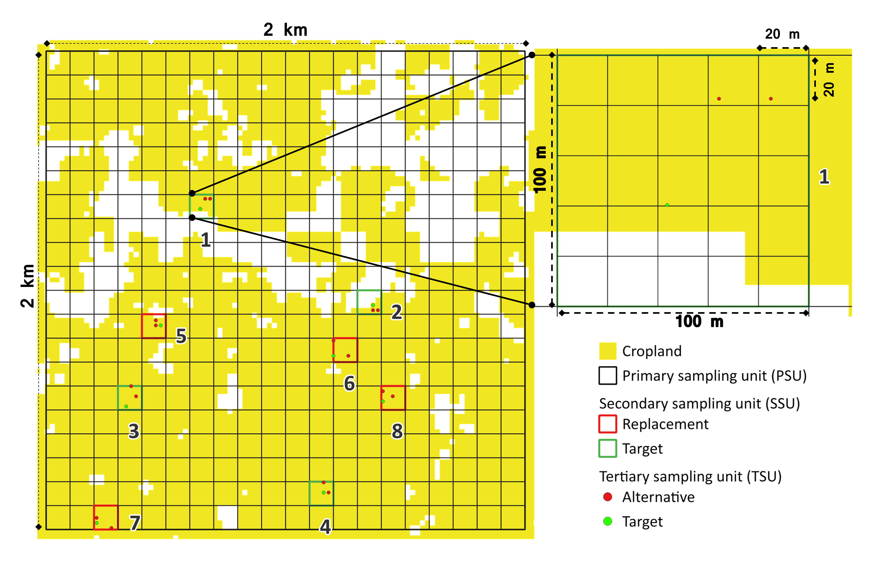
Figure 3.1: Example of a primary sampling unit with eight secondary sampling units, each containing three tertiary sampling units. Target units or points are in green, and replacements are in red.
3.3.3.1 PSU Selection Process
The process of selecting the PSUs is summarized as follows:
Step 1: Create 2km × 2km Grid (Figure 3.2) - A 2km × 2km grid covering the entire region of interest (ROI) is created - This grid serves as the foundational structure for stratification and spatial analysis
Step 2: Overlay Land Use and Protected Areas (Figure 3.3) - Land-use and land cover (LULC) mask layer identifying cropland, forest, or grassland is overlaid - Protected area boundaries are incorporated - Grid cells where cropland, forest, or grassland cover more than 10% (or specified percentage) are retained - This ensures that only PSUs containing target land uses are selected
Step 3: Apply Covariate Space Coverage (Figure 3.4) - PSUs are selected through CSC sampling using 85 environmental covariates - Covariates are resampled to 250m resolution - Principal Component Analysis (PCA) transforms covariates into PC layers - PC layers accounting for up to 99% of variance are retained - PC layers are upscaled to 2km × 2km resolution
Step 4: Determine Optimal Sample Size - Optimal number of PSUs determined using divergence metrics - Kullback-Leibler Divergence (KLD) quantifies how well sampled data represent full environmental covariate space - Unlike Jensen-Shannon methods, KLD does not overestimate optimal sample size (Saurette et al., 2023)
Step 5: Perform K-means Clustering - K-means clustering creates homogeneous clusters (strata) - Number of clusters equals total number of PSUs to be sampled - Legacy point data can be incorporated (clusters fixed at legacy locations) - Mean Squared Shortest Distance (MSSD) in covariate space is calculated - Process repeated 10 times, retaining trial with minimum MSSD
Step 6: Select Target and Replacement PSUs (Figure 3.5) - PSUs allocated by minimizing MSSD within environmental covariate space - Output: N PSUs where N equals total number of samples - Replacement PSUs calculated by randomly selecting grid cells within same cluster class

Figure 3.2: A 2×2 km grid is created across the region of interest.

Figure 3.3: The grid is overlaid with legacy point data, crop layer data and protected area boundaries.

Figure 3.4: PSUs located in non-protected areas and containing more than 10% or any specified percentage of crop coverage are selected. The Covariate Space Coverage sampling method, incorporating 85 environmental covariates, is applied to identify target and replacement PSUs.

Figure 3.5: The selected target and replacement PSUs.
3.3.3.2 SSU and TSU Selection Process
Stage 2: Secondary Sampling Units (SSUs)
The second stage involves selecting SSUs using Covariate Space Coverage Sampling (CSCS) based on 24 high-resolution environmental covariates. Each SSU represents a 100m × 100m (1 hectare) area divided into 25 regular sampling plots of 20m × 20m (Figure 3.6).
Selection scheme: - 8 SSUs selected from each PSU - 4 target SSUs (1-4): where samples will be collected
- 4 replacement SSUs (5-8): pre-identified substitutes - Replacement SSUs directly linked to targets (one-to-one basis): - SSU 5 replaces SSU 1 - SSU 6 replaces SSU 2 - SSU 7 replaces SSU 3 - SSU 8 replaces SSU 4
If all SSUs within a target PSU are exhausted, missing SSUs must be selected from the designated PSU replacement. The designated PSU replacements were selected with the same spatial variability as their PSU targets.

Figure 3.6: Single primary sampling unit displaying secondary sampling units (a), and a zoomed-in view of a secondary sampling unit with tertiary sampling units (b).
Stage 3: Tertiary Sampling Units (TSUs)
The third and final stage involves selecting TSUs using simple random sampling without replacement. Each SSU contains 25 possible TSUs of 20m × 20m, corresponding to the pixel size of the crop raster layer.
Selection scheme: - 3 TSUs per SSU: - 1 target TSU (primary sampling location) - 2 replacement TSUs (alternatives) - If a TSU is unsuitable, any replacement can be used - If all TSUs within an SSU are unsuitable, entire SSU is rejected
Soil sampling protocol: - Sampling conducted strictly at designated TSU locations - Maximum shift: 10 metres from defined coordinates
3.3.3.3 Site Identification System
The final site ID is an alphanumeric identifier structured as follows (Figure 3.7):
Format: AAA####-#-#X
Where: - AAA = Three-letter country ISO code (e.g., KEN for Kenya) - #### = Primary Sampling Unit number (zero-padded, e.g., 0001) - First # = Secondary Sampling Unit number (1-8) - Second # = Tertiary Sampling Unit number (1-3) - X = Land use type code: - C = Cropland - G = Grassland - F = Forest
Example: KEN0001-1-1C - Country: Kenya - PSU: 1 - SSU: 1 (target) - TSU: 1 (target) - Land use: Cropland
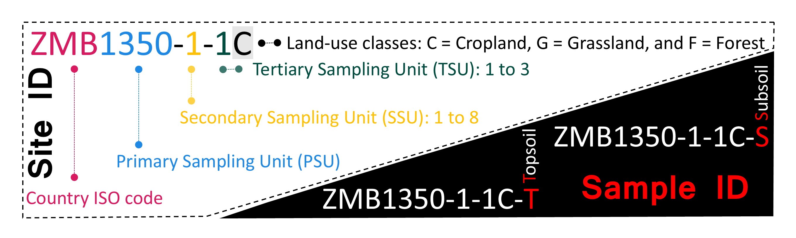
Figure 3.7: Deciphering the site identification.
3.4 Tutorial using R
This tutorial is designed for users with a basic understanding of R programming and provides a comprehensive guide to implementing a soil sampling design for soil monitoring and mapping. All scripts and data are available in the SoilFER Training Resources GitHub repository specifically within the scripts and initial data directories.
💡 Note: Ensure you have the tinytex, knitr, rmarkdown, and rstudioapi R packages installed to successfully run and render R Markdown documents before running this script. Additionally, install tinytex by running tinytex::install_tinytex() to enable LaTeX support for PDF generation.
3.4.1 Setting up the environment
First, set the working directory to the location of your R script. This ensures that all paths in the script are relative to the script’s location.
3.4.2 Install required libraries
The script uses several R libraries, each serving a specific purpose (Table 3.5).
| Package | Purpose |
|---|---|
| sp | Spatial data classes |
| terra | Raster data manipulation |
| raster | Legacy raster support |
| sf | Simple features (vector data) |
| sgsR | Spatial sampling |
| entropy | Entropy calculations |
| tripack | Triangulation |
| tibble | Data frames |
| manipulate | Interactive plotting |
| dplyr | Data manipulation |
| synoptReg | PCA for rasters |
| doSNOW | Parallel processing |
| Rfast | Fast R functions |
| fields | Distance calculations |
| ggplot2 | Visualization |
| rassta | Terrain analysis |
Some libraries might need to be installed from GitHub. Uncomment and run the lines below if needed:
# Install synoptReg package from GitHub
# install.packages("remotes") # Install remotes if not installed
# remotes::install_github("lemuscanovas/synoptReg")
packages <- c("sp", "terra", "raster", "sf", "sgsR", "entropy",
"tripack", "tibble", "manipulate", "dplyr", "synoptReg",
"doSNOW", "Rfast", "fields", "ggplot2", "rassta")
invisible(lapply(packages, library, character.only = TRUE))
rm(packages)Alternative method: In RStudio, use the Packages tab in the bottom-right pane → click Install → type package name → ensure “Install dependencies” is checked → click Install.
3.4.3 Define variables and parameters
Several variables and parameters must be defined to establish a consistent framework for the script.
3.4.3.2 Land-use type
The SoilFER project focuses on three primary land-use types: croplands (85%), grasslands (10%), and forests (5%).
3.4.3.3 File paths
# Path to data folders
raster.path <- "data/rasters/"
shp.path <- "data/shapes/"
other.path <- "data/other/"
landuse_dir <- paste0("data/results/", landuse, "/")
# Check if the directory exists; if not, create it
dir.create(other.path, showWarnings = FALSE, recursive = TRUE)
dir.create("results", showWarnings = FALSE, recursive = TRUE)
if (!file.exists(landuse_dir)) dir.create(landuse_dir)
results.path <- landuse_dir3.4.3.5 Sample size calculation
# Manual set-up
nsamples <- 300 # Total sampling sites
share <- 0.80 # 80% for this land use (croplands)
nsites <- nsamples * share # Final number of sites💡 Note: Optimal sample size (N) is calculated statistically later.
3.4.4 Custom functions
3.4.4.1 Covariate Space Coverage (CSIS)
The CSIS function is the backbone of clustering sampling units in covariate space. It ensures optimal distribution while considering any fixed legacy data.
How it works:
- Input parameters:
fixed: Preselected (legacy) sampling pointsnsup: Number of additional (new) sampling points to selectnstarts: Number of random starting points for clusteringmygrd: Grid of covariate data for ROI
- Workflow:
- Extract fixed points and exclude from grid
- Randomly initialize new sampling points
- Combine fixed and new centers
- Compute distances and assign points to nearest cluster
- Update cluster centers iteratively until convergence
- Calculate Mean Squared Shortest Distance (MSSSD)
- Save best clustering result
## This function performs constrained k-means clustering
CSIS <- function(fixed, nsup, nstarts, mygrd) {
# Args:
# fixed: Data frame of fixed legacy points
# nsup: Number of supplementary points to select
# nstarts: Number of random starts for optimization
# mygrd: Grid of all potential sampling locations
n_fix <- nrow(fixed)
p <- ncol(mygrd)
units <- fixed$units
mygrd_minfx <- mygrd[-units, ]
MSSSD_cur <- NA
for (s in 1:nstarts) {
units <- sample(nrow(mygrd_minfx), nsup)
centers_sup <- mygrd_minfx[units, ]
centers <- rbind(fixed[, names(mygrd)], centers_sup)
repeat {
D <- rdist(x1 = centers, x2 = mygrd)
cluster <- apply(X = D, MARGIN = 2, FUN = which.min) %>% as.factor(.)
centers_cur <- centers
for (i in 1:p) {
centers[, i] <- tapply(mygrd[, i], INDEX = cluster, FUN = mean)
}
# Restore fixed centers (legacy data points don't move)
centers[1:n_fix, ] <- centers_cur[1:n_fix, ]
# Check convergence
sumd <- diag(rdist(x1 = centers, x2 = centers_cur)) %>% sum(.)
if (sumd < 1E-12) {
D <- rdist(x1 = centers, x2 = mygrd)
Dmin <- apply(X = D, MARGIN = 2, FUN = min)
MSSSD <- mean(Dmin^2)
if (s == 1 | MSSSD < MSSSD_cur) {
centers_best <- centers
clusters_best <- cluster
MSSSD_cur <- MSSSD
}
break
}
}
print(paste0(s," out of ",nstarts))
}
list(centers = centers_best, cluster = clusters_best)
}💡 Note: This function creates spatially balanced sampling designs by considering existing sampling points and covariate distributions.
3.4.4.2 K-means with progress reporting
kmeans_with_progress <- function(data, centers, iter.max = 10000, nstart = 100) {
# Provides visual feedback during long k-means operations
best_result <- NULL
best_totss <- Inf
cat("Running k-means clustering with", nstart, "random starts...\n")
for (s in 1:nstart) {
result <- kmeans(data, centers = centers, iter.max = iter.max, nstart = 1)
if (result$tot.withinss < best_totss) {
best_result <- result
best_totss <- result$tot.withinss
}
print(paste0(s, " out of ", nstart))
}
cat("Best tot.withinss:", best_totss, "\n")
return(best_result)
}3.4.4.3 TSU generation
This function generates TSUs within SSUs, ensuring random distribution while respecting land-use constraints.
## This function creates random point samples within each SSU polygon
generate_tsu_points_within_ssu <- function(ssu, number_TSUs, index, ssu_type, crops) {
# Args:
# ssu: Single SSU polygon (sf object)
# number_TSUs: Number of points to generate
# index: SSU identifier
# ssu_type: "Target" or "Replacement"
# crops: Crop mask raster (20m resolution)
ssu_vect <- vect(ssu)
# Validate geometry
if (is.null(ssu_vect) || nrow(ssu_vect) == 0 || is.na(ext(ssu_vect))) {
warning(paste("SSU", index, "has invalid geometry. Skipping TSU generation."))
return(NULL)
}
# Clip crop raster to SSU
clipped_lu <- try(crop(crops, ssu_vect), silent = TRUE)
if (inherits(clipped_lu, "try-error") || is.null(clipped_lu)) {
warning(paste("SSU", index, "could not crop land use raster. Skipping."))
return(NULL)
}
# Sample points (tries two methods)
sampled_points <- try(sample_srs(clipped_lu, nSamp = number_TSUs), silent = TRUE)
if (inherits(sampled_points, "try-error") || is.null(sampled_points) || nrow(sampled_points) == 0) {
sampled_points <- try(spatSample(clipped_lu, size = number_TSUs, na.rm = TRUE, method = "random"), silent = TRUE)
}
if (inherits(sampled_points, "try-error") || is.null(sampled_points) || nrow(sampled_points) == 0) {
warning(paste("SSU", index, "failed to generate TSUs. Skipping."))
return(NULL)
}
# Add metadata
sampled_points$PSU_ID <- selected_psu$ID
sampled_points$SSU_ID <- index
sampled_points$TSU_ID <- seq_len(nrow(sampled_points))
sampled_points$SSU_Type <- ssu_type
sampled_points$TSU_Name <- paste0(sampled_points$PSU_ID, ".", index, ".", seq_len(nrow(sampled_points)))
return(sampled_points)
}3.4.5 Load country boundaries and legacy data
Load and transform country boundaries and legacy soil data to the desired CRS:
# Purpose: Import study area boundaries and existing soil sample locations
# Load country/region boundaries
country_boundaries <- file.path(paste0(shp.path,"roi_kansas_us_epsg_4326.shp"))
country_boundaries <- sf::st_read(country_boundaries, quiet=TRUE)
# Reproject if necessary
if(crs(country_boundaries)!=epsg){
country_boundaries <- country_boundaries %>%
st_as_sf() %>% sf::st_transform(crs=epsg)
}
# Load legacy soil data (optional - existing sample points)
legacy <- file.path(paste0(shp.path,"soil_legacy_data_kansas_epsg_4326.shp"))
if(file.exists(legacy)){
legacy <- sf::st_read(legacy, quiet=TRUE)
if(crs(legacy)!=epsg){
legacy <- legacy %>% sf::st_transform(crs=epsg)
}
} else {
rm(legacy) # Remove if doesn't exist
}
# Clean legacy data
if(exists("legacy")){
legacy <- dplyr::select(legacy, geometry)
legacy <- legacy[!duplicated(st_geometry(legacy)), ] # Remove duplicates
}💡 Note: Always verify that all geospatial datasets use the same CRS before performing spatial operations. Misaligned CRSs can lead to incorrect analyses.
3.4.5.1 Visualize boundaries and legacy data
# Visualize boundaries and legacy points
ggplot() +
geom_spatvector(data = country_boundaries, fill = NA, color = "black") +
geom_spatvector(data = legacy, aes(geometry = geometry), size = 0.7, color = "red") +
theme_minimal()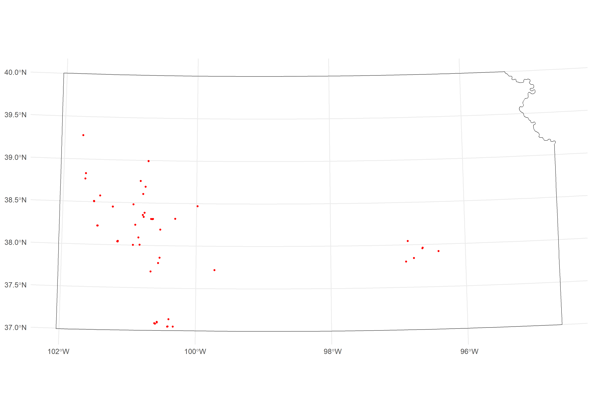
Figure 3.8: Grey rectangle outlines the region of interest, while red dots represent the geolocations of the legacy data points.
3.4.6 Load environmental covariates for PSUs
In many sampling campaigns, not all areas within the country or region of interest are suitable for fieldwork. Protected areas may be legally restricted, steep terrain may be unsafe or inaccessible, and other constraints (e.g., water bodies, urban zones) can reduce the feasible sampling space. For this reason, SoilFER treats “exclusion layers” as optional inputs that refine the accessible area without changing the overall survey objective. When an exclusion layer is available, it is loaded, reprojected to the common CRS used in the project, and then converted into a mask that can be applied to the sampling universe. If a layer is not available, the script continues without it, ensuring that the workflow remains robust across countries with different data availability.
In addition to exclusion layers, ancillary datasets such as geology or geomorphology can be used for stratification. These layers do not exclude areas from sampling; instead, they provide categorical information that may help define strata or interpret spatial patterns during mapping and analysis.
3.4.6.1 Protected areas mask (exclude from sampling)
This chunk checks whether a protected-areas shapefile exists. If it does, the polygons are read, transformed to the project CRS if needed, dissolved into a single geometry, and then subtracted from the country boundary. The result is a “non-protected” mask representing areas where sampling is allowed.
# Protected areas (areas to EXCLUDE from sampling)
npa <- file.path(paste0(shp.path,"protected_areas_epsg_4326.shp"))
if(file.exists(npa)){
npa <- sf::st_read(npa, quiet = FALSE)
if(crs(npa)!=epsg){
npa <- npa %>% sf::st_transform(crs = epsg)
}
npa <- sf::st_union(npa)
npa <- sf::st_difference(country_boundaries, npa) # Create "non-protected" mask
} else {
rm(npa)
}ggplot() +
geom_sf(data = npa, fill = "grey90", color = "black", linewidth = 0.3) +
coord_sf(datum = NA) +
labs(title = "Accessible area mask (non-protected in grey)") +
theme_minimal(base_size = 11)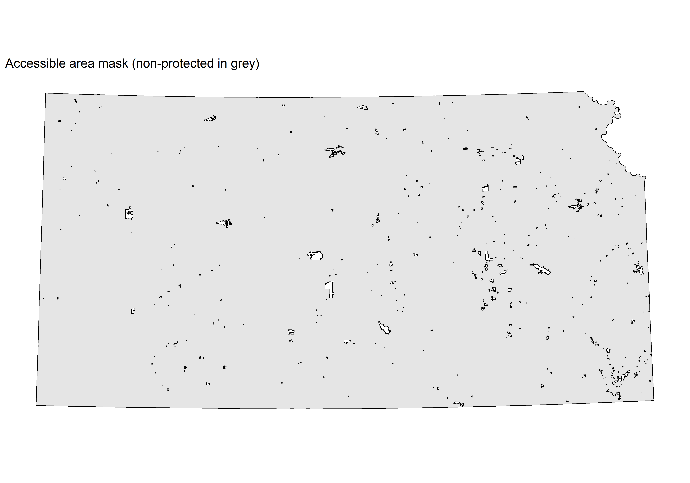
Figure 3.9: Protected areas (empty shapes)
3.4.6.2 Slope mask (exclude steep terrain)
This chunk checks whether a pre-processed binary slope raster exists. If it does, the raster is loaded, reprojected to the project CRS if needed, normalised to a strict binary mask (1/NA) by dividing by itself, and then clipped to the country boundary. The result is a raster where cells with value 1 represent accessible slopes and all excluded cells are NA. If the file is not found the object is removed so downstream code knows no slope filter applies.
💡 Note: The slope mask must be prepared before running this script. In QGIS, use the Raster Calculator with the formula (“Slope@1” <= 30) * 1 to create a binary raster (1: accessible, 0: excluded), then use the Set Null tool to convert 0 to NA.
Threshold guidelines: gentle terrain 0-15%, moderate terrain 15-30% (typical field-work threshold), steep terrain > 30% (usually excluded).
slope <- file.path(paste0(raster.path,"slope_mask_epsg_4326.tif"))
if(file.exists(slope)){
slope <- rast(slope)
if(crs(slope)!=epsg){
slope <- project(slope, epsg, method="near")
}
slope <- slope/slope # Convert to binary mask
slope <- terra::mask(slope, country_boundaries)
} else {
rm(slope)
}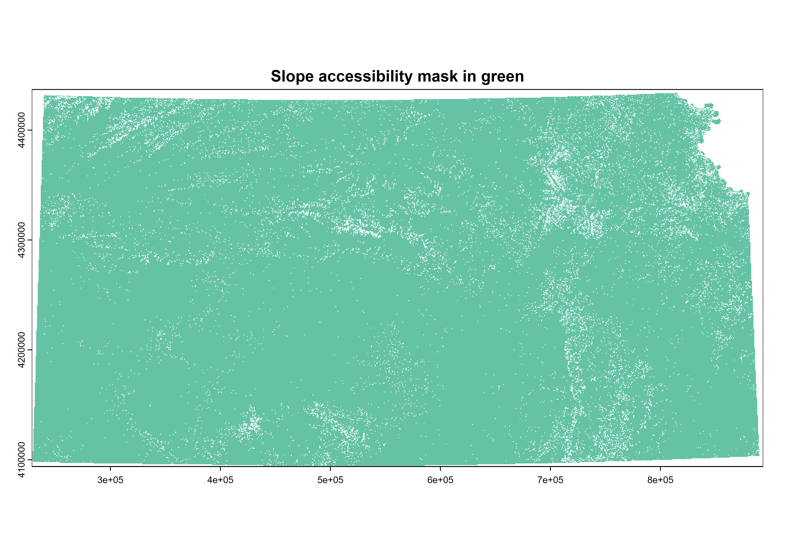
Figure 3.10: Slope accessibility areas
3.4.6.3 Ecoregions / Geology data (for stratification)
This chunk checks whether an ecoregions shapefile exists. If it does, the polygons are read, reprojected to the project CRS if needed, and a numeric GEO field is created by converting the ecoregion name column to a factor and then to an integer. This numeric encoding is required for rasterization and dummy-variable conversion in later steps. If the file is not found the object is removed so downstream code knows no geology stratification applies.
💡 Note: For Kansas, ecoregion boundaries (US_L3NAME field) are used as a geology proxy. For other study areas, replace the shapefile path and update geo.classes to match the field name containing your geological or ecoregion classification. Any polygon layer with a categorical attribute can be used here.
# Geology data (for stratification) - If available
geo <- file.path(paste0(shp.path,"ecoregions_kansas_epsg_4326.shp"))
geo.classes <- "US_L3NAME" # Field name for geology classes
if(file.exists(geo)){
geo <- sf::st_read(geo, quiet=TRUE)
if(crs(geo)!=epsg){
geo <- geo %>% sf::st_transform(crs=epsg)
}
geo$GEO <- as.numeric(as.factor(geo[[geo.classes]]))
} else {
rm(geo)
}ggplot() +
geom_sf(data = geo, aes(fill = US_L3NAME), color = "black", linewidth = 0.2) +
labs(title = "Level III Ecoregions",
fill = "Ecoregion (US_L3NAME)") +
theme_minimal(base_size = 11) +
theme(legend.position = "right")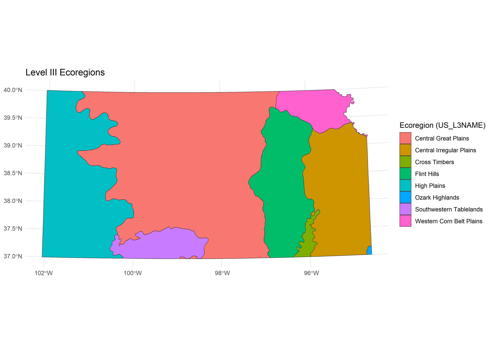
Figure 3.11: Ecoregions
3.4.6.4 Geomorphology data (for stratification)
This chunk checks whether a geomorphology file exists and handles two possible formats. If the file is a raster (.tif), it is loaded, renamed to GEOMORPH, and reprojected if needed. If it is a shapefile (.shp), it is read as a vector, reprojected if needed, and a numeric GEOMORPH field is created by encoding the class column as integers. In both cases the result is clipped to the country boundary. If the file is not found the object is removed so downstream code knows no geomorphology stratification applies.
💡 Note: For Kansas, the geomorphology raster is exported from Google Earth Engine (GEE_Exports/) using the Geomorphon landform classification. Both raster (.tif) and vector (.shp) formats are supported. Update the file path and geomorph.classes field name to match your dataset. If using a shapefile, ensure the classification column contains categorical landform labels that can be factorised into integer codes.
# Geomorphology data (for stratification) - if available
geomorph <- file.path(paste0(raster.path, "/GEE_Exports/Geomorphon_Landforms_KANSAS.tif"))
geomorph.classes <- "Class" # Field name for geomorphology classes (shapefile only)
if (file.exists(geomorph)) {
file_extension <- tools::file_ext(geomorph)
if (file_extension == "tif") {
geomorph <- rast(geomorph)
names(geomorph) <- "GEOMORPH"
if (crs(geomorph) != epsg) {
geomorph <- project(geomorph, epsg, method = "near")
}
} else if (file_extension == "shp") {
geomorph <- sf::st_read(geomorph, quiet = TRUE)
if (sf::st_crs(geomorph)$epsg != epsg) {
geomorph <- sf::st_transform(geomorph, crs = epsg)
}
geomorph$GEOMORPH <- as.numeric(as.factor(geomorph[[geomorph.classes]])) # Encode as integers
}
geomorph <- terra::mask(geomorph, country_boundaries)
} else {
rm(geomorph)
}# Create a class lookup table (Geomorpho90m / geomorphons)
geomorph_lut <- data.frame(
value = 1:10,
class = c(
"Flat",
"Peak / summit",
"Ridge",
"Shoulder",
"Spur",
"Slope",
"Hollow",
"Footslope",
"Valley",
"Pit / depression"
)
)
# Semantically meaningful colors: warm tones for highs, cool tones for lows
geomorph_colors <- c(
"Flat" = "#F5F5DC", # beige – level ground
"Peak / summit" = "#8B0000", # dark red – highest points
"Ridge" = "#CD5C5C", # indian red – elongated highs
"Shoulder" = "#D2691E", # chocolate – convex upper slopes
"Spur" = "#DAA520", # goldenrod – diverging slopes
"Slope" = "#6B8E23", # olive – planar slopes
"Hollow" = "#4682B4", # steel blue – converging slopes
"Footslope" = "#5F9EA0", # cadet blue – concave lower slopes
"Valley" = "#00008B", # dark blue – linear lows
"Pit / depression" = "#191970" # midnight – lowest points
)
# Attach labels to the raster as categories
geomorph_cat <- as.factor(geomorph)
levels(geomorph_cat) <- list(data.frame(
ID = geomorph_lut$value,
class = geomorph_lut$class
))
par(mar = c(3, 3, 4, 3), bg = "white")
plot(
geomorph_cat,
col = geomorph_colors[levels(geomorph_cat)[[1]]$class],
main = "Geomorphology",
axes = FALSE,
box = FALSE,
plg = list(
inset = c(0.02, 0.03),
cex = 0.75,
title = "Geomorphons",
bty = "n"
)
)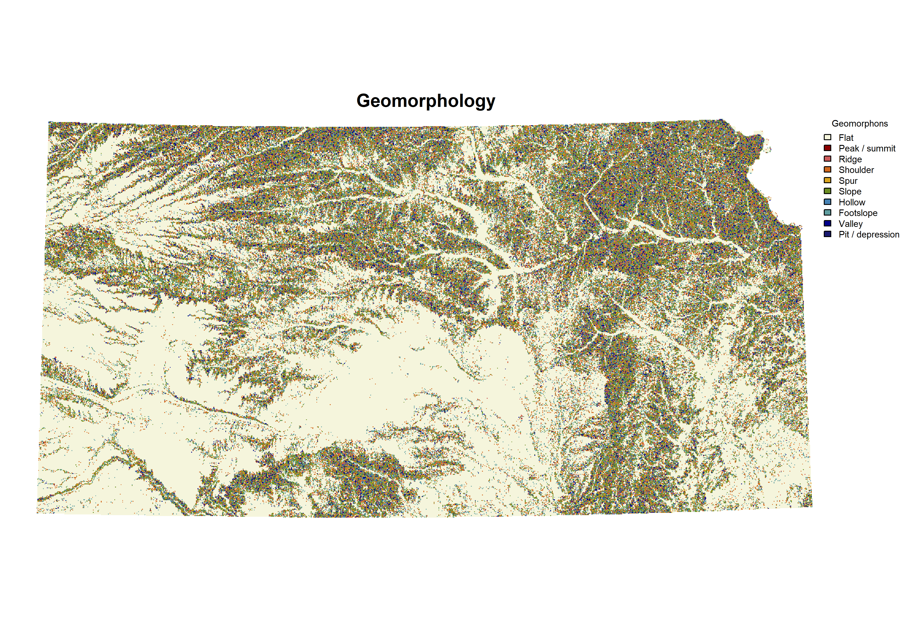
Figure 3.12: Geomorphology retrieved from GEE
3.4.6.5 Environmental covariates created/retrieved from previous Chapter
This section loads and prepares the environmental covariates used to delineate Primary Sampling Units (PSUs). These variables define the environmental space within which PSUs are distributed. First, the script locates and loads the environmental raster stack exported from Google Earth Engine (GEE). The raster file contains multiple environmental layers (e.g., climate, terrain, vegetation indices) at 250 m resolution. Second, the coordinate reference system (CRS) is checked. If the raster CRS does not match the project CRS (epsg), the data are reprojected using nearest-neighbour interpolation to preserve categorical values. Third, the raster stack is resampled to the PSU spatial resolution (2 km). A template raster is created using the desired PSU grid size (psu_size). The environmental layers are then aggregated to this coarser resolution using bilinear interpolation. This ensures that environmental variability is represented at the same spatial scale at which PSUs will be defined. It is essential that the aggregation resolution matches the PSU size; otherwise, inconsistencies may arise between environmental stratification and sampling unit geometry. Finally, the raster stack is masked to the country boundary, ensuring that environmental data are retained only within the region of interest.
# Purpose: Load environmental data at 2km resolution for PSU selection from GEE code
# Note: These covariates determine WHERE PSUs are placed
cov.dat <- list.files(paste0(raster.path, "GEE_Exports/"),
pattern = "Environmental_Covariates_250m_KANSAS.tif$",
recursive = TRUE, full.names = TRUE)
cov.dat <- terra::rast(cov.dat)
# Reproject if necessary
if(crs(cov.dat)!=epsg){
cov.dat <- terra::project(cov.dat, epsg, method="near")
}
# Resample to PSU resolution (2km)
# IMPORTANT: This aggregation must match your PSU size
psu_size_template <- rast(ext(cov.dat), resolution = psu_size, crs = crs(cov.dat))
cov.dat <- resample(cov.dat, psu_size_template, method = "bilinear")
cov.dat <- terra::mask(cov.dat, country_boundaries)| Category | Variable | |
|---|---|---|
| 1 | Climate (CHELSA) | bio1 |
| 2 | Climate (CHELSA) | bio5 |
| 3 | Climate (CHELSA) | bio6 |
| 4 | Climate (CHELSA) | bio12 |
| 5 | Climate (CHELSA) | bio13 |
| 6 | Climate (CHELSA) | bio14 |
| 7 | Climate (CHELSA) | bio16 |
| 8 | Climate (CHELSA) | bio17 |
| 9 | Energy & Water Balance | ngd10 |
| 10 | Energy & Water Balance | pet_penman_max |
| 11 | Energy & Water Balance | pet_penman_mean |
| 12 | Energy & Water Balance | pet_penman_min |
| 13 | Energy & Water Balance | pet_penman_range |
| 14 | Energy & Water Balance | sfcWind_max |
| 15 | Energy & Water Balance | sfcWind_mean |
| 16 | Energy & Water Balance | sfcWind_range |
| 17 | Vegetation Indices (MODIS) | fpar_*_mean/sd |
| 18 | Vegetation Indices (MODIS) | lstd_*_mean/sd |
| 19 | Vegetation Indices (MODIS) | ndlst_*_mean/sd |
| 20 | Vegetation Indices (MODIS) | ndvi_*_mean/sd |
| 21 | Vegetation Indices (MODIS) | snow_cover |
| 22 | Vegetation Indices (MODIS) | swir_060708_500m_mean |
| 41 | Land Cover | crops |
| 42 | Land Cover | flooded_vegetation |
| 43 | Land Cover | grass |
| 44 | Land Cover | shrub_and_scrub |
| 45 | Land Cover | trees |
| 47 | Terrain Derivatives (DTM) | dtm_elevation_250m |
| 48 | Terrain Derivatives (DTM) | dtm_slope_250m |
| 49 | Terrain Derivatives (DTM) | dtm_tpi_250m |
| 50 | Terrain Derivatives (DTM) | dtm_twi_500m |
| 51 | Terrain Derivatives (DTM) | dtm_curvature_250m |
| 52 | Terrain Derivatives (DTM) | dtm_upslopecurvature_250m |
| 53 | Terrain Derivatives (DTM) | dtm_downslopecurvature_250m |
| 54 | Terrain Derivatives (DTM) | dtm_vbf_250m |
| 55 | Terrain Derivatives (DTM) | dtm_mrn_250m |
| 56 | Terrain Derivatives (DTM) | dtm_dvm_250m |
| 57 | Terrain Derivatives (DTM) | dtm_dvm2_250m |
💡 Note: Initial number of environmental covariates is 66.
3.4.6.6 Load and process soil-climate data (Newhall)
The Newhall soil-climate dataset provides categorical (i.e., regime classes) and continuous variables describing soil temperature and moisture regimes. This section loads the Newhall raster, ensures it matches the project CRS, removes layers that are not required, and then harmonises all remaining layers to the same grid as the environmental covariates (cov.dat). Categorical layers are resampled using nearest-neighbour interpolation to preserve class identities, whereas continuous layers can be resampled with default interpolation.
# Load and process soil climate data
newhall <- list.files(raster.path, pattern = "newhall.tif$", recursive = TRUE, full.names = TRUE)
newhall <- terra::rast(newhall)
if(crs(newhall)!=epsg){
newhall <- terra::project(newhall, epsg, method="near")
}
# Remove unnecessary layers
newhall$regimeSubdivision1 <- NULL
newhall$regimeSubdivision2 <- NULL
# Process categorical variables (preserve factor levels)
temperatureRegime <- project(newhall$temperatureRegime, cov.dat, method = "near")
moistureRegime <- project(newhall$moistureRegime, cov.dat, method = "near")
newhall$temperatureRegime <- NULL
newhall$moistureRegime <- NULL
newhall <- terra::resample(newhall, cov.dat)3.4.6.7 Convert soil-climate regimes to dummy variables
The Newhall soil-climate dataset includes categorical variables describing soil temperature and moisture regimes. Since these are nominal classes (e.g., mesic, thermic, ustic), they cannot be directly used in most statistical or machine-learning models. To incorporate them as predictors in the PSU selection workflow, each regime class is converted into a set of binary (dummy) variables. Each dummy layer represents the presence (1) or absence (0) of a specific regime class.
# Convert to dummy variables (one column per category)
temperatureRegime <- as.factor(temperatureRegime)
temperatureRegime <- dummies(ca.rast = temperatureRegime, preval = 1, absval = 0)
moistureRegime <- as.factor(moistureRegime)
moistureRegime <- dummies(ca.rast = moistureRegime, preval = 1, absval = 0)3.4.6.8 Integrating all layers and finalising the Covariate Stack
At this stage, all continuous and categorical environmental predictors are combined into a single covariate stack (cov.dat). This stack defines the environmental feature space used for PSU placement. Optional stratification layers such as geology and geomorphology can be included when available. Because these layers are categorical, they are first rasterised to the covariate grid and then converted to dummy variables (one binary layer per class). Before merging, all optional layers are checked and harmonised to ensure they match the covariate stack in extent and resolution. Finally, the complete stack is cropped and masked to the study boundary and written to disk for reuse.
# Merge all covariates
cov.dat <- c(cov.dat, newhall, temperatureRegime, moistureRegime)
# Add geology if available
if(exists("geo")){
geo <- rasterize(as(geo,"SpatVector"), cov.dat, field="GEO")
geo <- dummies(ca.rast = geo$GEO, preval = 1, absval = 0)
cov.dat <- c(cov.dat, geo)
}
# Add geomorphology if available
if (exists("geomorph")) {
if (!inherits(geomorph, "SpatRaster")) {
geomorph <- rasterize(as(geomorph, "SpatVector"), cov.dat, field = "GEOMORPH")
}
geomorph <- dummies(ca.rast = geomorph$GEOMORPH, preval = 1, absval = 0)
# Ensure matching extents
if (!identical(ext(cov.dat), ext(geomorph))) {
geomorph <- extend(geomorph, cov.dat)
}
if (!all(res(cov.dat) == res(geomorph))) {
geomorph <- resample(geomorph, cov.dat, method = "near")
}
cov.dat <- c(cov.dat, geomorph)
}
# Clean up
rm(newhall, geomorph)
gc()
# Crop to study area
cov.dat <- crop(cov.dat, country_boundaries, mask=TRUE, overwrite=TRUE)
## Saving the covariate stack if R clashes
writeRaster(cov.dat, paste0(raster.path,"cov_dat_stack_psus.tif"), overwrite=TRUE)
# Reload if needed
# cov.dat <- rast(paste0(raster.path, "cov_dat_stack_psus.tif"))| Category | Description | Number of layers |
|---|---|---|
| Climate (CHELSA bioclim) | Temperature and precipitation bioclimatic variables (bio1–bio17) | 8 |
| Energy & Atmospheric Variables | Growing degree days, PET, wind statistics | 8 |
| Vegetation Indices (MODIS seasonal) | FPAR, LST day/night, NDVI (seasonal mean and SD) | 32 |
| Land Cover | Fractional land cover classes (crops, trees, grass, etc.) | 6 |
| Terrain Derivatives (DTM) | Elevation, slope, curvature, TPI, TWI, VBF and derivatives | 12 |
| Soil Climate (Newhall continuous) | Water balance and moisture/temperature regime metrics | 15 |
| Soil Climate Regimes (Dummy variables) | Binary layers representing temperature and moisture regime classes | 6 |
| Geology (Dummy variables) | Binary layers representing geology/ecoregion classes | 8 |
| Geomorphology (Dummy variables) | Binary layers representing geomorphon landform classes | 10 |
💡 Note: Stacking is the process of combining multiple spatial data layers (raster datasets) into a single multi-layer object. This is useful when multiple variables need to be analysed together. The final dataset comprises 85 environmental covariates, which expand to 105 raster layers after converting categorical variables into dummy (binary) layers.
3.4.7 Principal Component Analysis (PCA)
Environmental covariates such as satellite-derived spectral indices often exhibit strong inter-correlation because they are calculated from overlapping spectral bands and capture related biophysical properties (e.g., vegetation vigor, moisture content, surface reflectance characteristics). Such redundancy can inflate dimensionality and negatively affect clustering or classification procedures. To address this issue, a Principal Component Analysis (PCA) was applied to the standardised environmental covariate raster stack. Standardisation ensured that indices with different value ranges contributed equally to the analysis.
The PCA transforms correlated indices into orthogonal components representing dominant gradients across the landscape. These components summarise major patterns in surface reflectance and vegetation structure while removing multicollinearity among indices. Only the minimum number of principal components explaining more than 99% of the cumulative variance were retained. This threshold preserves nearly all information while substantially reducing data dimensionality and computational burden. The resulting principal component rasters were then exported for subsequent spatial clustering and landscape characterisation.
pca <- scale(cov.dat)
pca <- synoptReg::raster_pca(pca) # Fast PCA for rasters
cov.dat <- pca$PCA
# Keep only components explaining 99% of variance
n_comps <- first(which(pca$summaryPCA[3,] > 0.99))
cov.dat <- pca$PCA[[1:n_comps]]
cat(sprintf("Using %d principal components (explaining >99%% variance)\n", n_comps))
# Save PCA results
writeRaster(cov.dat, paste0(results.path,"PCA_projected.tif"), overwrite=TRUE)
rm(pca)
# Reload for further processing
# Why this is useful:
# - Previous sections (data loading, PCA) can take 30+ minutes
# - If script crashes or needs modification, you can load here
# - If the file exists in the folder from previous processing
# cov.dat <- rast(paste0(results.path,"PCA_projected.tif"))
# Reproject if necessary
if(crs(cov.dat)!=epsg){
cov.dat <- terra::project(cov.dat, epsg, method="near")
}# Visualising maps from PC1-PC3
# Consistent color scale across PC1–PC3
minmax_vals <- minmax(pca$PCA[[1:3]])
zlim_vals <- range(minmax_vals)
cols <- hcl.colors(100, "Blue-Red 3", rev = TRUE)
par(mfrow = c(1,3), mar = c(3,3,3,6)) # extra space for legend
plot(pca$PCA[[1]],
col = cols,
zlim = zlim_vals,
main = "PC1",
axes = FALSE,
box = FALSE,
plg = list(title = "PC value"))
plot(pca$PCA[[2]],
col = cols,
zlim = zlim_vals,
axes = FALSE,
box = FALSE,
main = "PC2",
plg = list(title = "PC value"))
plot(pca$PCA[[3]],
col = cols,
zlim = zlim_vals,
main = "PC3",
axes = FALSE,
box = FALSE,
plg = list(title = "PC value"))
# Plot cumulative variance
cum_var <- pca$summaryPCA["Cumulative", ]
plot(cum_var,
type = "l",
lwd = 2,
xlab = "Principal Component",
ylab = "Cumulative Variance Explained",
main = "Cumulative Variance")
abline(h = 0.99, col = "red", lty = 2)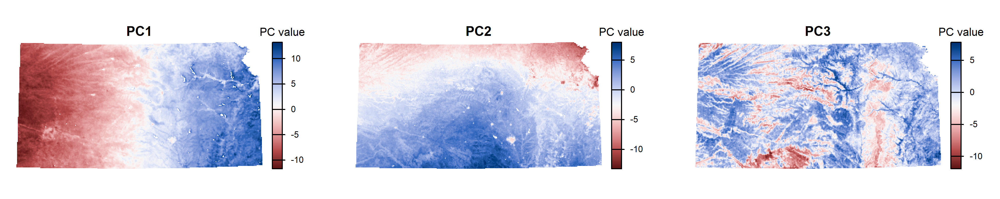
Figure 3.13: Spatial distribution of the first three principal components (PC1-PC3).
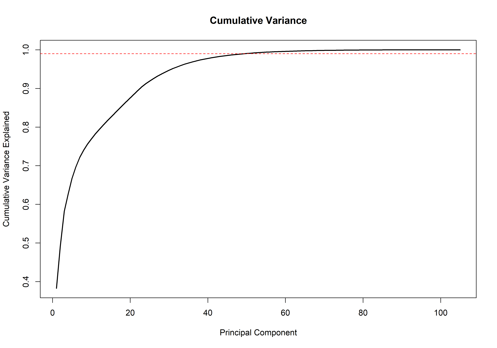
Figure 3.14: Cumulative variance explained.
3.4.8 Load and prepare land-use data
This section defines the sampling universe. That is the spatial area where sampling units are allowed to be placed. Two spatial resolutions are used:
20 m resolution: precise placement of Temporary Sampling Units (TSUs),
100 m resolution: filtering and aggregation for Primary Sampling Units (PSUs).
The cropland raster is loaded and converted to a binary mask where: 1 = cropland and NA = non-cropland. This ensures that subsequent sampling occurs only within agricultural areas.
# Define file path
landuse_file <- file.path(paste0(raster.path,"Cropland_Mask_KANSAS_merged.tif"))
# Load raster
crops <- rast(landuse_file)
# Convert to binary mask (1 = crop, NA = other)
crops <- crops / crops
names(crops) <- "lu"The land-use raster is reprojected to match the coordinate reference system (CRS) used throughout the analysis. Nearest-neighbor interpolation is applied to preserve categorical values.
if(crs(crops) != epsg){
crops <- terra::project(crops, epsg, method = "near")
}
# Display raster info
crops| Property | Value |
|---|---|
| Class | SpatRaster |
| Dimensions (rows, cols, layers) | 21007 × 40716 × 1 |
| Resolution (x, y) | 16.32943 × 16.32943 |
| Extent (xmin, xmax, ymin, ymax) | 228591.3, 893460.4, 4093884, 4436916 |
| Coordinate Reference System | NAD27 / UTM zone 14N (EPSG:26714) |
| Value Range | 1–1 (binary mask) |
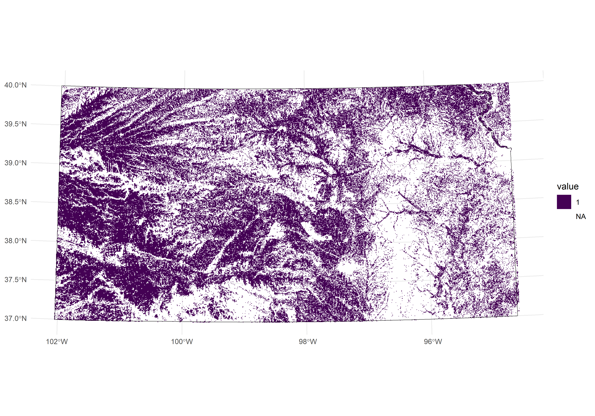
Figure 3.15: Spatial distribution of crops represented at the original pixel resolution (i.e., 16-meter pixel resolution).
The raster is resampled to 20 m resolution, which determines the spatial precision of TSU placement. This resolution directly controls sampling accuracy. Nearest-neighbor resampling is used to maintain categorical integrity.
# Create 20 m template
lulc_size_template <- rast(ext(crops), resolution = 20, crs = crs(crops))
crops <- as.factor(crops)
crops <- resample(crops, lulc_size_template, method = "near")Optional spatial masks are applied: (i) npa excludes protected or restricted areas and (ii) slope excludes unsuitable terrain. These masks refine the sampling universe to feasible agricultural locations, increasing the likelihood that soil surveyors will be able to access the selected sites.
if(exists("npa")){
crops <- mask(crops, npa)
}
if(exists("slope")){
slope <- resample(slope, crops, method="near")
crops <- crops * slope
}
# rm(npa, slope)| Property | Value |
|---|---|
| Class | SpatRaster |
| Dimensions (rows, cols, layers) | 17152 × 33243 × 1 |
| Resolution (x, y) | 20.00027 × 19.99955 |
| Extent (xmin, xmax, ymin, ymax) | 228591.3, 893460.4, 4093884, 4436916 |
| Coordinate Reference System | NAD27 / UTM zone 14N (EPSG:26714) |
| Value Range | 1–1 (binary mask) |
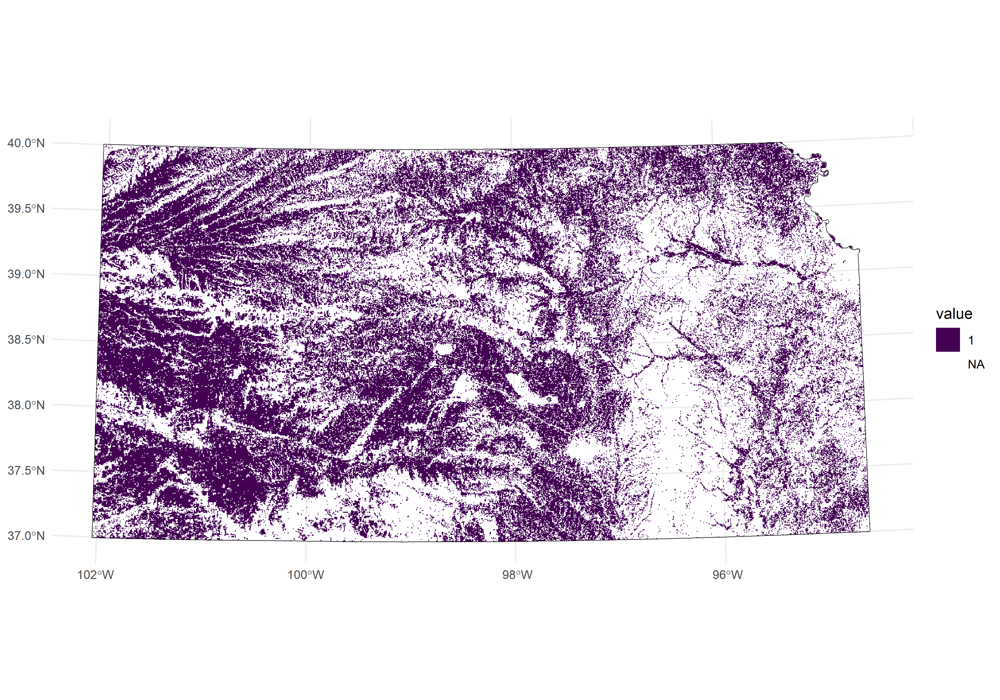
Figure 3.16: Spatial distribution of crops represented at 20-meter pixel resolution and excluding protected-areas and unaccessible slopes.
The processed 20 m cropland mask is saved and reloaded to ensure consistency and memory stability.
# Save 20m resolution crop mask
writeRaster(crops, paste0(raster.path,"crop_mask_20m_clean.tif"), overwrite=TRUE)
# Same situation as loading "cov.dat"
crops <- rast(paste0(raster.path,"crop_mask_20m_clean.tif"))Aggregate to 100 m Resolution
Resampling to 100 m resolution significantly optimises processing speed and reduces storage requirements.The 20 m raster is aggregated to 100 m resolution using the modal (majority) value. This coarser layer is used for PSU filtering and landscape-scale stratification at 1 ha (100 m x 100 m).
# Create 100m resolution version for PSU filtering
# Aggregate: (20m × 5) = 100m pixels
lu <- aggregate(crops, 5, fun=modal, cores = 4, na.rm=T)
names(lu) <- "lu"
writeRaster(lu, paste0(raster.path,"crop_mask_100m.tif"), overwrite=TRUE)
# Same situation as loading "cov.dat"
# lu <- rast(paste0(raster.path,"crop_mask_100m.tif"))
# Filter legacy data to crop areas
if (exists("legacy")){
legacy$INSIDE <- terra::extract(crops, legacy) %>% dplyr::select(lu)
legacy <- legacy[!is.na(legacy$INSIDE),] %>% dplyr::select(-"INSIDE")
}
# Display new resolution
lu
# Visualize (it takes a few minutes)
ggplot() +
geom_spatraster(data = as.factor(crops)) +
scale_fill_viridis_d(na.value = "transparent") +
geom_spatvector(data = country_boundaries, fill = NA, color = "black") +
geom_spatvector(data = legacy, size = 0.7, color = "red") +
theme_minimal()| Property | Value |
|---|---|
| Class | SpatRaster |
| Dimensions (rows, cols, layers) | 3431 × 6649 × 1 |
| Resolution (x, y) | 100.0014 × 99.99777 |
| Extent (xmin, xmax, ymin, ymax) | 228591.3, 893500.4, 4093824, 4436916 |
| Coordinate Reference System | NAD27 / UTM zone 14N (EPSG:26714) |
| Value Range | 1–1 (binary mask) |
Figure 3.17: Spatial distribution of crops aggregated/upscaled from the original 20-meter pixel resolution to a coarser 100-meter pixel resolution for improved visualization and analysis.
3.4.9 Create Primary Sampling Units (PSU Grid)
3.4.10 Select PSUs with Sufficient Land Use Coverage
3.4.10.1 Calculate Land Use Percentage
# Extract land-use values for each PSU
extracted_values <- terra::extract(lu, psu_grid)
# Calculate percentage (400 pixels = 2km × 2km PSU at 100m resolution)
crop_perc <- extracted_values %>%
group_by(ID) %>%
summarize(crop_perc = sum(lu, na.rm = TRUE) * 100 / 400)
rm(extracted_values)
# Add to PSU grid
psu_grid$crop_perc <- crop_perc$crop_perc
cat(sprintf("Crop percentage calculated for all PSUs\n"))3.4.10.2 Filter PSUs
# Keep only PSUs with sufficient crop coverage
psu_grid_filtered <- psu_grid[psu_grid$crop_perc > percent_crop, "ID"]
cat(sprintf("PSUs with >%d%% crop coverage: %d\n",
percent_crop, nrow(psu_grid_filtered)))
# Save filtered grid
write_sf(psu_grid_filtered,
file.path(paste0(results.path, "/psu_grid_counts.shp")),
overwrite = TRUE)3.4.11 Rasterize PSUs for Covariate Space Coverage
# Create raster template at PSU resolution
template <- rast(vect(psu_grid_filtered), res = psu_size)
template <- rasterize(vect(psu_grid_filtered), template, field = "ID")
# Crop covariates to filtered PSUs
cov.dat <- crop(cov.dat, psu_grid_filtered, mask = TRUE, overwrite = TRUE)
# Resample covariates to match PSU template
PSU.r <- resample(cov.dat, template)
cat(sprintf("Covariates resampled to PSU resolution\n"))💡 Why this matters: Cropping and resampling ensure that spatial resolution and extent of covariates match the PSU grid, facilitating accurate clustering.
3.4.12 Compute Optimal Sample Size
After rasterizing PSUs for Covariate Space Coverage, calculate the optimal sample size based on divergence metrics (Saurette et al., 2023).
# Load optimization script
source("scripts/opt_sample.R")
# Prepare covariate data
psu.r.df <- data.frame(PSU.r)
# Define parameters
initial.n <- 50 # Minimum sample size
final.n <- 3000 # Maximum sample size
by.n <- 25 # Increment step
iters <- 4 # Iterations per trial3.4.12.1 Run Optimization
# Calculate optimal sample size using normalized KL-divergence
opt_N_fcs <- opt_sample(
alg = "fcs", # Feature coverage sampling
s_min = initial.n,
s_max = final.n,
s_step = by.n,
s_reps = iters,
covs = psu.r.df,
cpus = NULL, # Use all available cores
conf = 0.95
)
# Display results
print(opt_N_fcs$optimal_sites)3.4.12.2 Extract Optimal Sample Size
# Use Kullback-Leibler Divergence (most reliable)
optimal_N_KLD <- opt_N_fcs$optimal_sites[1, 2]
cat(sprintf("\n✓ Optimal sample size: %d PSUs\n", optimal_N_KLD))
# Set final PSU count
n.psu <- optimal_N_KLD
# Expected total sampling sites (4 per PSU)
cat(sprintf("Expected total target sites: %d\n", n.psu * 4))💡 Note: The optimal sample size is based on Kullback-Leibler Divergence, which does not overestimate like Jensen-Shannon methods.
3.4.13 Covariate Space Coverage - Computing PSUs
Covariate Space Coverage (CSC) sampling ensures sampling units are distributed effectively across the multidimensional space of environmental covariates.
3.4.13.1 Prepare Function Parameters
# Convert raster to dataframe with coordinates
PSU.df <- as.data.frame(PSU.r, xy = TRUE)
# Get covariate names
covs <- names(cov.dat)
# Scale covariates (mean = 0, SD = 1)
mygrd <- data.frame(scale(PSU.df[, covs]))
cat(sprintf("Prepared %d PSUs with %d covariates for clustering\n",
nrow(mygrd), ncol(mygrd)))3.4.13.2 Perform K-means Clustering
# With legacy data
if (exists("legacy")) {
# Filter legacy to PSU grid extent
legacy <- st_filter(legacy, psu_grid_filtered)
legacy_df <- st_coordinates(legacy)
# Find nearest PSU for each legacy point
units <- numeric(nrow(legacy_df))
for (i in 1:nrow(legacy_df)) {
distances <- sqrt((PSU.df$x - legacy_df[i, "X"])^2 +
(PSU.df$y - legacy_df[i, "Y"])^2)
units[i] <- which.min(distances)
}
# Create fixed centers from legacy points
fixed <- unique(data.frame(units, scale(PSU.df[, covs])[units, ]))
cat(sprintf("Incorporating %d legacy points as fixed centers\n", nrow(fixed)))
# Run constrained clustering
res <- CSIS(fixed = fixed,
nsup = n.psu,
nstarts = iterations,
mygrd = mygrd)
} else {
# Standard k-means without legacy data
res <- kmeans(mygrd,
centers = n.psu,
iter.max = 10000,
nstart = 100)
cat(sprintf("Running standard k-means with %d centers\n", n.psu))
}💡 Note: Progress is printed as “X out of Y” for each clustering iteration.
3.4.13.3 Assign Clusters and Calculate Distances
# Assign clusters to PSUs
PSU.df$cluster <- res$cluster
# Compute distances to nearest cluster center
D <- rdist(x1 = res$centers, x2 = scale(PSU.df[, covs]))
units <- apply(D, MARGIN = 1, FUN = which.min)
# Calculate Mean Squared Shortest Distance (MSSSD)
dmin <- apply(D, MARGIN = 2, min)
MSSSD <- mean(dmin^2)
cat(sprintf("MSSSD: %.6f\n", MSSSD))3.4.13.4 Extract Selected PSUs
# Get selected PSU coordinates and covariates
myCSCsample <- PSU.df[units, c("x", "y", covs)]
# Label as legacy or new
if (exists("legacy")) {
myCSCsample$type <- c(rep("legacy", nrow(fixed)),
rep("new", length(units) - nrow(fixed)))
} else {
myCSCsample$type <- "new"
}
# Convert to spatial object
myCSCsample <- myCSCsample %>%
st_as_sf(coords = c("x", "y"), crs = epsg)
# Separate legacy and new points
if (exists("legacy")) {
legacy <- myCSCsample[myCSCsample$type == "legacy", ]
}
new <- myCSCsample[myCSCsample$type == "new", ]
# Get PSU IDs
PSUs <- sf::st_intersection(psu_grid_filtered, new) %>%
dplyr::select(ID)
# Extract target PSUs
target.PSUs <- psu_grid_filtered[psu_grid_filtered$ID %in% PSUs$ID, ] %>%
dplyr::select(ID)
cat(sprintf("\n✓ Selected %d target PSUs\n", nrow(target.PSUs)))
# Cleanup
rm(new, dmin, MSSSD)3.4.14 Compute SSUs and TSUs
Now we generate Secondary Sampling Units (100m × 100m) within each PSU and Tertiary Sampling Units (20m × 20m points) within each SSU.
3.4.14.1 Load High-Resolution Covariates
# Load SSU-level covariates (100m resolution)
cov.dat.ssu <- terra::rast(paste0(raster.path,
"hres_data/covs_stack_ssu_1ha_ZMB.tif"))
cat(sprintf("Loaded %d high-resolution covariates\n", nlyr(cov.dat.ssu)))
# Display covariate names
names(cov.dat.ssu)
# Remove system-specific bands if needed
cov.dat.ssu <- subset(cov.dat.ssu,
names(cov.dat.ssu)[!names(cov.dat.ssu) %in%
c("sysisen_B2", "sysisen_B3", "sysisen_B4", "sysisen_B5",
"sysisen_B6", "sysisen_B7", "sysisen_B8", "sysisen_B8A",
"sysisen_B11", "sysisen_B12")])
# Replace NA with 0 (for categorical variables)
cov.dat.ssu[is.na(cov.dat.ssu)] <- 0
cat(sprintf("Final SSU covariates: %d layers\n", nlyr(cov.dat.ssu)))3.4.14.2 Process Each PSU
# Initialize storage lists
selected_ssus <- list()
all_psus_tsus <- list()
# Main loop: Process each PSU
for (psu_id in 1:nrow(target.PSUs)) {
selected_psu <- target.PSUs[psu_id, ]
# Generate 100m × 100m SSU grid
ssu_grid <- st_make_grid(selected_psu,
cellsize = c(ssu_size, ssu_size),
square = TRUE)
ssu_grid_sf <- st_sf(geometry = ssu_grid)
# Convert to SpatVector for extraction
ssu_grid_vect <- vect(ssu_grid_sf)
# Extract land-use values to filter SSUs
extracted_values <- extract(crops, ssu_grid_vect, fun = table)
# Calculate land-use percentage (25 pixels per SSU at 20m resolution)
ssu_grid_sf$lu <- (extracted_values[, 2] * 100) / 25
ssu_grid_sf <- ssu_grid_sf[ssu_grid_sf$lu > percent_crop, ]
# Progress update
if (psu_id %% 10 == 0 || psu_id == nrow(target.PSUs)) {
cat(sprintf("\rProgress: %.2f%% (%d out of %d)",
(psu_id / nrow(target.PSUs)) * 100,
psu_id, nrow(target.PSUs)))
flush.console()
}
# Check minimum SSU requirement
total_ssus <- nrow(ssu_grid_sf)
if (total_ssus < (num_primary_ssus + num_alternative_ssus)) {
warning(paste("PSU", psu_id, "does not have enough SSUs. Skipping."))
next
}
# Extract covariate values for each SSU
ssu_covariates <- terra::extract(cov.dat.ssu, vect(ssu_grid_sf), df = TRUE)
# Merge with SSU spatial data
ssu_data <- cbind(ssu_grid_sf, ssu_covariates[, -1])
ssu_data_values <- st_drop_geometry(ssu_data)
# Identify columns to exclude from scaling (categorical)
exclude <- grep("^geomorph_|^lu$", names(ssu_data_values), value = TRUE)
# Separate scalable and non-scalable data
to_scale <- ssu_data_values[, !names(ssu_data_values) %in% exclude]
to_keep <- ssu_data_values[, names(ssu_data_values) %in% exclude, drop = FALSE]
# Remove NA-only columns
to_scale <- to_scale[, colSums(!is.na(to_scale)) > 0, drop = FALSE]
# Identify zero-variance columns
zero_variance_cols <- sapply(to_scale, function(x) sd(x, na.rm = TRUE) == 0)
zero_variance_cols[is.na(zero_variance_cols)] <- TRUE
# Scale only non-zero-variance columns
scaled_part <- to_scale
if (any(!zero_variance_cols)) {
scaled_part[, !zero_variance_cols] <- scale(to_scale[, !zero_variance_cols])
}
# Recombine
mygrd_ssu <- cbind(to_keep, scaled_part)
# Perform k-means clustering for this PSU
optimal_k <- num_primary_ssus # 4 clusters
kmeans_result <- kmeans(mygrd_ssu[, -1],
centers = optimal_k,
iter.max = 10000,
nstart = 10)
ssu_data$cluster <- as.factor(kmeans_result$cluster)
# CSC Sampling: Select closest SSUs to cluster centers
D <- rdist(x1 = kmeans_result$centers, x2 = mygrd_ssu[, -1])
# Target SSUs (closest to centers)
target_units <- apply(D, MARGIN = 1, FUN = function(x) order(x)[1])
target_ssus <- ssu_data[target_units, ]
# Replacement SSUs (second closest to centers)
replacement_units <- apply(D, MARGIN = 1, FUN = function(x) order(x)[2])
replacement_ssus <- ssu_data[replacement_units, ]
# Add metadata
target_ssus$SSU_Type <- "Target"
replacement_ssus$SSU_Type <- "Replacement"
target_ssus$SSU_ID <- 1:nrow(target_ssus)
replacement_ssus$SSU_ID <- (nrow(target_ssus) + 1):(2 * nrow(target_ssus))
# Link replacements to targets by cluster
replacement_ssus$replacement_for <- sapply(replacement_ssus$cluster, function(cl) {
matched <- target_ssus$SSU_ID[target_ssus$cluster == cl]
if (length(matched) > 0) return(matched[1]) else return(NA)
})
target_ssus$replacement_for <- NA
# Add PSU ID
target_ssus$PSU_ID <- selected_psu$ID
replacement_ssus$PSU_ID <- selected_psu$ID
# Store SSUs
selected_ssus[[psu_id]] <- rbind(target_ssus, replacement_ssus)
# Generate TSUs for target SSUs
primary_tsus <- lapply(rownames(target_ssus), function(index) {
generate_tsu_points_within_ssu(
ssu_grid_sf[rownames(ssu_grid_sf) == index, ],
number_TSUs,
index,
"Target",
crops
)
})
# Generate TSUs for replacement SSUs
alternative_tsus <- lapply(rownames(replacement_ssus), function(index) {
generate_tsu_points_within_ssu(
ssu_grid_sf[rownames(ssu_grid_sf) == index, ],
number_TSUs,
index,
"Replacement",
crops
)
})
# Combine all TSUs for this PSU
all_psus_tsus[[psu_id]] <- do.call(rbind, c(primary_tsus, alternative_tsus))
}
cat(sprintf("\n✓ Processing complete\n"))
cat(sprintf(" Successful PSUs: %d\n", length(selected_ssus)))3.4.14.3 Combine SSUs and TSUs
# Combine all SSUs
all_ssus <- do.call(rbind, selected_ssus)
all_ssus <- all_ssus %>%
mutate_at(vars(PSU_ID, SSU_ID), as.numeric)
# Combine all TSUs
all_tsus <- do.call(rbind, all_psus_tsus)
all_tsus <- all_tsus %>%
mutate_at(vars(PSU_ID, SSU_ID), as.numeric)
# Join TSU and SSU metadata
all_tsus <- st_join(all_tsus,
all_ssus[c("PSU_ID", "SSU_ID", "SSU_Type", "replacement_for")])
# Reorganize columns
all_tsus <- all_tsus %>%
select(PSU_ID = PSU_ID.x,
SSU_ID = SSU_ID.y,
SSU_Type = SSU_Type.y,
Replacement_for = replacement_for,
TSU_ID,
geometry)
# Label TSU types
all_tsus$TSU_Type <- "Target"
all_tsus[all_tsus$TSU_ID > 1, "TSU_Type"] <- "Alternative"
all_tsus$PSU_Type <- "Target"
# Final column selection
all_tsus <- all_tsus %>%
dplyr::select("PSU_ID", "SSU_ID", "SSU_Type", "Replacement_for",
"TSU_ID", "TSU_Type", "geometry")
cat(sprintf("\n✓ Total SSUs: %d\n", nrow(all_ssus)))
cat(sprintf("✓ Total TSUs: %d\n", nrow(all_tsus)))
cat(sprintf("✓ Target sampling sites: %d\n",
sum(all_tsus$SSU_Type == "Target" & all_tsus$TSU_Type == "Target")))3.4.15 Export Sampling Units
3.4.15.1 Create Cluster Raster
# Convert cluster information to raster
dfr <- PSU.df[, c("x", "y", "cluster")]
dfr$cluster <- as.numeric(dfr$cluster)
dfr <- rasterFromXYZ(dfr)
crs(dfr) <- epsg
# Associate clusters with PSUs
PSU_cluster.id <- unlist(extract(dfr, target.PSUs))
valid.PSU_clusters <- target.PSUs %>%
mutate(cluster = extract(dfr, target.PSUs, fun = mean, na.rm = TRUE))
all.PSU_clusters <- psu_grid_filtered %>%
mutate(cluster = extract(dfr, psu_grid_filtered, fun = mean, na.rm = TRUE))
all.PSU_clusters <- na.omit(all.PSU_clusters)3.4.15.4 Export Shapefiles
# Export target PSUs
write_sf(valid.PSU_clusters,
paste0(results.path, "/PSUs_target.shp"),
overwrite = TRUE)
# Export target TSUs
write_sf(all_tsus,
paste0(results.path, "/TSUs_target.shp"),
overwrite = TRUE)
# Export all PSU clusters
write_sf(all.PSU_clusters,
paste0(results.path, "/PSU_pattern_cl.shp"),
overwrite = TRUE)
# Export cluster raster
writeRaster(dfr,
paste0(results.path, "/clusters.tif"),
overwrite = TRUE)
cat(sprintf("\n✓ All files exported successfully\n"))
cat(sprintf(" Location: %s\n", results.path))3.4.16 Compute Alternative PSUs
Generate replacement PSUs from the same environmental clusters as targets.
# Filter out already selected PSUs
remaining_psus <- all.PSU_clusters %>%
filter(!(ID %in% target.PSUs$ID))
# Get unique cluster IDs from targets
unique_clusters <- unique(valid.PSU_clusters$Replace_ID)
# Initialize list for replacements
replacement_psus <- data.frame()
# For each target cluster, select a replacement
for (clust_id in unique_clusters) {
# Find candidates in same cluster
candidates <- remaining_psus %>%
filter(cluster == clust_id)
if (nrow(candidates) > 0) {
# Random selection from candidates
replacement <- candidates[sample(nrow(candidates), 1), ]
replacement$replaces_PSU <- valid.PSU_clusters$ID[
valid.PSU_clusters$Replace_ID == clust_id
][1]
replacement_psus <- rbind(replacement_psus, replacement)
} else {
warning(sprintf("No replacement found for cluster %d", clust_id))
}
}
cat(sprintf("\n✓ Generated %d replacement PSUs\n", nrow(replacement_psus)))
# Export replacement PSUs
write_sf(replacement_psus,
paste0(results.path, "/PSUs_replacements.shp"),
overwrite = TRUE)Note: Follow the same SSU and TSU generation process for replacement PSUs to create complete backup sampling locations.
3.4.17 Merging Results from Multiple Land Uses
After running the sampling design separately for cropland, grassland, and forest, combine all results into a unified dataset with country-wide unique IDs.
library(data.table)
# Define land uses and codes
landuses <- c("cropland", "grassland", "forest")
lu_codes <- c("C", "G", "F")
# Initialize storage lists
psus_target_list <- list()
tsus_target_list <- list()
psus_repl_list <- list()
tsus_repl_list <- list()
# Load all shapefiles
for (i in seq_along(landuses)) {
lu <- landuses[i]
code <- lu_codes[i]
# Target PSUs
file_path <- sprintf("results/%s/PSUs_target.shp", lu)
if (file.exists(file_path)) {
temp <- st_read(file_path, quiet = TRUE)
temp$lulc <- code
psus_target_list[[lu]] <- temp
cat(sprintf("✓ Loaded %s target PSUs (%d)\n", lu, nrow(temp)))
}
# Target TSUs
file_path <- sprintf("results/%s/TSUs_target.shp", lu)
if (file.exists(file_path)) {
temp <- st_read(file_path, quiet = TRUE)
temp$lulc <- code
tsus_target_list[[lu]] <- temp
cat(sprintf("✓ Loaded %s target TSUs (%d)\n", lu, nrow(temp)))
}
# Replacement PSUs and TSUs
# (similar loading process)
}
# Merge using data.table (handles different column names)
psus_target <- st_as_sf(rbindlist(psus_target_list, fill = TRUE))
tsus_target <- st_as_sf(rbindlist(tsus_target_list, fill = TRUE))
cat(sprintf("\n=== MERGED DATASETS ===\n"))
cat(sprintf("Target PSUs: %d\n", nrow(psus_target)))
cat(sprintf("Target TSUs: %d\n", nrow(tsus_target)))3.4.17.1 Assign Country-Wide Unique IDs
# Assign sequential IDs to target PSUs
psus_target$PSU_ID_country <- 1:nrow(psus_target)
# Continue numbering for replacements
start_id <- nrow(psus_target) + 1
psus_repl$PSU_ID_country <- start_id:(start_id + nrow(psus_repl) - 1)
# Transfer country-wide IDs to TSUs
tsus_target$PSU_temp_ID <- paste0(tsus_target$PSU_ID, "-", tsus_target$lulc)
psus_target$PSU_temp_ID <- paste0(psus_target$ID, "-", psus_target$lulc)
tsus_target$PSU_ID_country <- psus_target$PSU_ID_country[
match(tsus_target$PSU_temp_ID, psus_target$PSU_temp_ID)
]
# Create final site IDs with country-wide PSU numbers
tsus_target <- tsus_target %>%
mutate(site_id = sprintf("%s%04d-%d-%d%s",
ISO.code, PSU_ID_country, SSU_ID, TSU_ID, lulc))
# Clean up
tsus_target <- tsus_target %>%
select(PSU_ID = PSU_ID_country, SSU_ID, SSU_Type, TSU_ID, TSU_Type,
site_id, lulc, geometry)
psus_target <- psus_target %>%
select(PSU_ID = PSU_ID_country, lulc, geometry)
cat(sprintf("\n✓ Assigned country-wide unique IDs\n"))3.4.17.2 Export Unified Datasets
# Export unified datasets
write_sf(psus_target, "results/all/all_psus_target.shp", overwrite = TRUE)
write_sf(tsus_target, "results/all/all_tsus_target.shp", overwrite = TRUE)
write_sf(psus_repl, "results/all/all_psus_replacements.shp", overwrite = TRUE)
write_sf(tsus_repl, "results/all/all_tsus_replacements.shp", overwrite = TRUE)
cat(sprintf("\n✓ All unified datasets exported to results/all/\n"))3.4.17.3 Summary Statistics
# Count target sites by land use
summary_lu <- tsus_target %>%
filter(SSU_Type == "Target" & TSU_Type == "Target") %>%
st_drop_geometry() %>%
group_by(lulc) %>%
summarise(
n_PSUs = n_distinct(PSU_ID),
n_sites = n(),
sites_per_PSU = n / n_distinct(PSU_ID)
)
print(summary_lu)
# Total counts
cat(sprintf("\n=== FINAL SAMPLING DESIGN ===\n"))
cat(sprintf("Total PSUs: %d\n", n_distinct(tsus_target$PSU_ID)))
cat(sprintf("Total target sampling sites: %d\n",
sum(tsus_target$SSU_Type == "Target" & tsus_target$TSU_Type == "Target")))
cat(sprintf(" - Cropland: %d\n",
sum(tsus_target$lulc == "C" & tsus_target$SSU_Type == "Target" &
tsus_target$TSU_Type == "Target")))
cat(sprintf(" - Grassland: %d\n",
sum(tsus_target$lulc == "G" & tsus_target$SSU_Type == "Target" &
tsus_target$TSU_Type == "Target")))
cat(sprintf(" - Forest: %d\n",
sum(tsus_target$lulc == "F" & tsus_target$SSU_Type == "Target" &
tsus_target$TSU_Type == "Target")))3.4.17.4 Create Distribution Maps
library(ggplot2)
# Filter to target sites only
target_sites <- tsus_target %>%
filter(SSU_Type == "Target" & TSU_Type == "Target")
# Load country boundaries
country <- st_read("shapes/roi_country_epsg_4326.shp")
# Create distribution map
ggplot() +
geom_sf(data = country, fill = "gray95", color = "gray50") +
geom_sf(data = target_sites, aes(color = lulc), size = 0.5, alpha = 0.6) +
scale_color_manual(
name = "Land Use",
values = c("C" = "#F096FF", "G" = "#FFFF4C", "F" = "#006400"),
labels = c("C" = "Cropland", "G" = "Grassland", "F" = "Forest")
) +
labs(title = "SoilFER Sampling Design - Final Site Distribution",
subtitle = sprintf("%d sampling locations across %d PSUs",
nrow(target_sites), n_distinct(target_sites$PSU_ID))) +
theme_minimal() +
theme(legend.position = "right")
ggsave("results/all/final_site_distribution.png",
width = 12, height = 10, dpi = 300)
cat(sprintf("\n✓ Distribution map saved\n"))3.4.18 Field Sampling Protocol
3.4.18.1 GPS Device Preparation
3.4.18.1.1 Export to GPX Format
# Load target TSUs
tsus_field <- st_read("results/all/all_tsus_target.shp")
# Filter to primary targets only (1 per SSU)
tsus_field <- tsus_field %>%
filter(SSU_Type == "Target" & TSU_Type == "Target")
# Transform to WGS84 (required for GPS)
tsus_field_wgs84 <- st_transform(tsus_field, crs = 4326)
# Export to GPX
st_write(tsus_field_wgs84,
"results/all/field_sampling_points.gpx",
driver = "GPX",
delete_dsn = TRUE)
cat(sprintf("✓ Exported %d waypoints to GPX\n", nrow(tsus_field_wgs84)))3.4.18.2 Sampling Procedure
For each PSU (in order of PSU_ID):
Navigate to TSU 1 (SSU_ID=1, TSU_ID=1)
- If accessible → Sample at exact GPS location
- If inaccessible (physical barrier) → Use TSU 2 (Alternative 1) or TSU 3 (Alternative 2)
Navigate to TSU 2 (SSU_ID=2, TSU_ID=1)
- Repeat accessibility check and sampling
Navigate to TSU 3 (SSU_ID=3, TSU_ID=1)
Navigate to TSU 4 (SSU_ID=4, TSU_ID=1)
If entire PSU is inaccessible: - Use replacement_PSU_ID to find backup PSU - Navigate to replacement PSU location - Sample at replacement TSUs (SSU_ID = 5, 6, 7, 8)
3.4.18.3 Data Recording
Field form should capture (Table 3.11):
| Field | Example | Notes |
|---|---|---|
| site_id | KEN0001-1-1C | CRITICAL - Unique identifier |
| date | 2025-01-15 | Date of sampling |
| team | Team A | Field team name |
| coordinates_actual | -1.2345, 36.7890 | Actual GPS coordinates |
| accessibility | Target / Alt1 / Alt2 | Which TSU was sampled |
| land_use_observed | Maize field | Visual confirmation |
| soil_depth | 45 cm | Depth to restrictive layer |
| photos | KEN0001-1-1C_001.jpg | Geotagged photos |
| notes | Rocky, 15% slope | Relevant observations |
3.4.18.4 Quality Control
During field work: - ✅ Verify land use matches expected type - ✅ Document if alternative TSU used (and reason) - ✅ Take geotagged photos at each site - ✅ Record actual GPS coordinates - ✅ Note any anomalies or challenges
Post-field QC: - Check for duplicate site_id entries - Verify all mandatory fields completed - Cross-reference photos with field records - Flag sites with large GPS deviation (>30m from waypoint)
Appendices
Appendix A: Software and Data Sources
3.4.18.4.1 Software Requirements
- R (version ≥ 4.0): https://www.r-project.org/
- RStudio: https://posit.co/products/open-source/rstudio/
- Google Earth Engine: https://earthengine.google.com/
- QGIS (optional): https://qgis.org/
3.4.18.4.2 Data Sources
Global Datasets: - CHELSA Climate: https://chelsa-climate.org/ - TerraClimate: https://www.climatologylab.org/terraclimate.html - MODIS: https://lpdaac.usgs.gov/products/mod13q1v006/ - Sentinel-2: https://scihub.copernicus.eu/ - SRTM DEM: https://earthexplorer.usgs.gov/ - ESA WorldCover: https://esa-worldcover.org/ - SoilGrids: https://soilgrids.org/ - Geomorpho90m: https://www.geomorpho90m.org/
Administrative Boundaries: - GADM: https://gadm.org/ - Natural Earth: https://www.naturalearthdata.com/
Appendix B: Troubleshooting Common Issues
Appendix C: Acronyms and Abbreviations
| Acronym | Definition |
|---|---|
| AOI | Area of Interest |
| AWC | Available Water Capacity |
| BAS | Balanced Acceptance Sampling |
| CHELSA | Climatologies at High resolution for the Earth’s Land Surface Areas |
| CLHS | Conditioned Latin Hypercube Sampling |
| CRS | Coordinate Reference System |
| CSC | Covariate Space Coverage |
| CSCS | Covariate Space Coverage Sampling |
| DEM | Digital Elevation Model |
| DSM | Digital Soil Mapping |
| EVI | Enhanced Vegetation Index |
| FAO | Food and Agriculture Organization |
| FPAR | Fraction of Photosynthetically Active Radiation |
| GEE | Google Earth Engine |
| GRTS | Generalized Random Tessellation Stratified |
| ISO | International Organization for Standardization |
| KLD | Kullback-Leibler Divergence |
| JSD | Jensen-Shannon Divergence |
| LULC | Land Use and Land Cover |
| MAST | Mean Annual Soil Temperature |
| MODIS | Moderate Resolution Imaging Spectroradiometer |
| MSSD | Mean Squared Shortest Distance |
| MSSSD | Mean Squared Shortest Scaled Distance |
| NDVI | Normalized Difference Vegetation Index |
| NSM | Normalized Soil Moisture |
| PCA | Principal Component Analysis |
| PC | Principal Component |
| PET | Potential Evapotranspiration |
| PSU | Primary Sampling Unit |
| ROI | Region of Interest |
| SoilFER | Soil Mapping for Resilient Agrifood Systems |
| SRS | Simple Random Sampling |
| SRTM | Shuttle Radar Topography Mission |
| SSU | Secondary Sampling Unit |
| SWIR | Shortwave Infrared |
| TPI | Topographic Position Index |
| TSU | Tertiary Sampling Unit |
| TWI | Topographic Wetness Index |
| VACS | Vision for Adapted Crops and Soils |
For questions, technical support, or to report issues, please visit the SoilFER GitHub repository or contact the SoilFER team at FAO.
3.5 References
::::
References
Soils4Africa Project Secretariat. Avaliable at: https://www.soils4africa-h2020.eu/↩︎